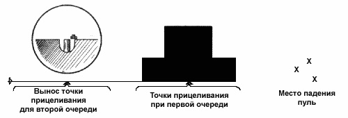

Огневая подготовка
Тема 1. Назначение, общее устройство автомата и ручных гранат. Приемы и правила стрельбы.
Занятие 2. Порядок неполной разборки и последующей сборки автомата АК-74.
Занятие 3. Назначение, устройство и действие ручных гранат. Требования безопасности.
Тема 1. Назначение, общее устройство автомата и ручных гранат. Приемы и правила стрельбы.
Занятие 1. Назначение, общее устройство, неполная разборка и сборка автомата, работа его частей и механизмов.
1. Назначение, боевые свойства и устройство автомата АК-74.
Назначение и боевые свойства 5,45-мм автомата Калашникова АК74 (АКС74)
5,45-мм автомат Калашникова является индивидуальным оружием. Он предназначен для уничтожения живой силы и поражения огневых средств противника. Для поражения противника в рукопашном бою к автомату присоединяется штык-нож. Для стрельбы и наблюдения в условиях естественной ночной освещенности к автоматам АК74Н и АКС74Н присоединяется ночной стрелковый прицел универсальный (НСПУ).
Для стрельбы из автомата применяются патроны с обыкновенными (со стальным сердечником) и трассирующими пулями.
Из автомата ведется автоматический или одиночный огонь. Автоматический огонь является основным видом огня: он ведется короткими (до 5 выстрелов) и длинными (до 10 выстрелов) очередями и непрерывно. Подача патронов при стрельбе производится из коробчатого магазина емкостью на 30 патронов. Магазины автомата и пулемёта взаимозаменяемы.
Прицельная дальность стрельбы – 1000 м. Наиболее действительный огонь по наземным целям, по самолетам, вертолетам и парашютистам – на дальности до 500 м.
Сосредоточенный огонь по наземным групповым целям ведется на дальность до 1000 м.
Дальность прямого выстрела: по грудной фигуре – 440 м, по бегущей фигуре – 625 м.
Темп стрельбы около 600 выстрелов в минуту.
Боевая скорострельность: при стрельбе очередями – до 100 выстрелов в минуту; при стрельбе одиночными выстрелами – до 40 выстрелов в минуту.
Вес автомата без штыка-ножа со снаряженным патронами пластмассовым магазином: АК74 – 3,6 кг. Вес штыка-ножа с ножнами – 490 г.
Назначение и боевые свойства 5,45-мм автомата Калашникова АКС74У
5,45-мм автомат Калашникова укороченный является индивидуальным оружием и предназначен для уничтожения живой силы и поражения огневых средств противника. Для стрельбы и наблюдения в условиях естественной освещенности ночью к автомату АКС74УН2 присоединяется ночной стрелковый прицел универсальный модернизированный (НСПУМ)
Из автомата ведется автоматический или одиночный огонь. Автоматический огонь является основным видом огня; он ведется короткими (до 5 выстрелов) и длинными (до 10 выстрелов) очередями и непрерывно. Подача патронов при стрельбе производится из коробчатого магазина емкостью на 30 патронов.
Прицельная дальность стрельбы из автомата 500 м. Наиболее действительный огонь по наземным и воздушным целям на дальности до 400 м. Сосредоточенный огонь из автоматов по наземным групповым целям ведется на дальность до 800 м. Дальность прямого выстрела по грудной фигуре 360 м.
Темп стрельбы 650-700 выстрелов в минуту. Боевая скорострельность: при стрельбе очередями - до 100, при стрельбе одиночными выстрелами - до 40 выстрелов в минуту.
Масса автомата со снаряженным патрона ми пластмассовым магазином: АКС74У – 3 кг; АКС74УН2 -5,2 кг.
Общее устройство 5,45 мм автомата Калашникова АК74 (АКС74)
Общий вид 5,45-мм автомата Калашникова: а - с постоянным прикладом (AK74); б - со складывающимся прикладом (АКС74); в - с постоянным прикладом и ночным прицелом (АК74Н); г - со складывающимся прикладом и ночным прицелом (АКС74Н)
Автомат состоит из следующих основных частей и механизмов: ствола со ствольной коробкой, прицельным приспособлением, прикладом и пистолетной рукояткой; крышки ствольной коробки; затворной рамы с газовым поршнем; затвора; возвратного механизма; газовой трубки со ствольной накладкой; ударно-спускового механизма; цевья; магазина.
Основные части и механизмы автомата и его принадлежности: 1 - ствол со ствольной коробкой, с ударно-спусковым механизмом, прицельным приспособлением, прикладом и пистолетной рукояткой; 2 - дульный тормоз-компенсатор; 3 - крышка ствольной коробки; 4 - затворная рама с газовым поршнем; 5 - затвор; 6 - возвратный механизм; 7 - газовая трубка со ствольной накладкой; 8 - цевье; 9 - магазин; 10 - штык-нож; 11 - шомпол; 12 - пенал принадлежности.
Кроме того, у автомата имеется дульный тормоз-компенсатор и штык-нож.
В комплект автомата входят: принадлежность, ремень, сумка для магазинов и три запасных магазина; в комплект автомата со складывающимся прикладом, кроме того, входит чехол для автомата с карманом для магазина, а в комплект автомата с ночным прицелом входит также ночной стрелковый прицел универсальный.
Общее устройство 5,45 мм автомата Калашникова АКС74У
Общий вид 5,45-мм автомата Калашникова укороченного: а - с откинутым прикладом; б - со сложенным прикладом; в - с ночным прицелом (АКС74УН2)
Автомат состоит из следующих основных частей и механизмов: ствола со ствольной коробкой и крышкой ствольной коробки, с ударно-спусковым механизмом, прицельным приспособлением, складывающимся прикладом и пистолетной рукояткой; пламегасителя; затворной рамы с газовым поршнем; затвора; возвратного механизма; газовой трубки со ствольной накладкой; цевья; магазина; ремня.
Основные части и механизмы автомата: 1 - пламегаситель; 2 - газовая трубка со ствольной накладкой; 3 - ствол со ствольной коробкой и крышкой ствольной коробки, с ударно-спусковым механизмом, прицельным приспособлением, складывающимся прикладом и пистолетной рукояткой; 4 - затвор; 5-затворная рама с газовым поршнем; 6 - возвратный механизм; 7 - ремень; 8 - магазин; 9 – цевье
В комплект автомата входят: чехол для автомата, принадлежность, три запасных магазина и сумка для переноски магазинов и принадлежности. В комплект автомата с ночным прицелом входит также ночной стрелковый прицел универсальный модернизированный.
2. Работа частей и механизмов при заряжании и стрельбе. Возможные задержки и неисправности, возникающие при стрельбе, и способы их устранения. Уход за автоматом, его хранение и сбережение.
Положение частей и механизмов до заряжания
Затворная рама с газовым поршнем и затвором под действием возвратного механизма находится в крайнем переднем положении, газовый поршень - в патрубке газовой каморы; канал ствола закрыт затвором.
Затвор повернут вокруг продольной оси вправо, его боевые выступы находятся в вырезах ствольной коробки - затвор заперт. Возвратная пружина имеет наименьшее сжатие.
Положение частей и механизмов автомата до заряжания: 1 – спусковой крючок; 2 – сектор переводчика; 3 – шептало одиночного огня; 4 – замедлитель курка; 5 – фигурный выступ спускового крючка; 6 – боевая пружина; 7 – курок; 8 – рычаг автоспуска; 10 – затворная рама
Рычаг автоспуска под действием выступа затворный рамы повернут вперед и вниз. Курок спущен и упирается в затвор. Ударник под действием курка подан вперед. Боевая пружина находится в наименьшем сжатии; своей петлей она прижимает курок к затвору, а изогнутыми концами прижимает прямоугольные выступы спускового крючка к дну ствольной коробки, при этом хвост спускового крючка находится в переднем положении. Замедлитель курка под действием своей пружины передним выступом прижат к дну ствольной коробки. Переводчик находится в крайнем верхнем положении и закрывает ступенчатый вырез в крышке ствольной коробки (переводчик поставлен на предохранитель): сектор переводчика вошел в вырез шептала одиночного огня и находится над правым прямоугольным выступом спускового крючка (запирает спусковой крючок).
Работа частей и механизмов при заряжании
Для заряжания автомата надо присоединить к нему снаряженный магазин, поставить переводчик на автоматический огонь (АВ), отвести затворную раму назад до отказа и отпустить ее. Автомат заряжен.

Положение частей и механизмов автомата при заряжании: 1 – спусковой крючок; 2 – сектор переводчика; 3 – замедлитель курка; 4 – курок; 5 – шептало автоспуска; 6 – затворная рама
Если не предстоит немедленное открытие огня, то необходимо поставить переводчик на предохранитель. При присоединений магазина его зацеп заходит за выступ ствольной, коробки, а опорный выступ заскакивает за защелку и магазин удерживается в окне ствольной коробки. Верхний патрон, упираясь снизу в затворную раму, несколько опускает патроны в магазин, сжимая его пружину. При постановке переводчика на автоматический огонь ступенчатый вырез в крышке ствольной коробки для рукоятки затворной рамы освобождается, сектор переводчика остается в вырезе шептала одиночного огня, но не препятствует повороту спускового крючка.
При отведении затворной рамы назад, на длину свободного хода, она, действуя передним скосом фигурного выреза на ведущий выступ затвора, поворачивает затвор влево, боевые выступы затвора выходят из вырезов ствольной коробки - происходит отпирание затвора; выступ затворной рамы освобождает рычаг автоспуска, и шептало автоспуска под действием пружины прижимается к передней плоскости курка. При дальнейшем отведении затворной рамы вместе о ней отходит назад затвор, открывая канал ствола; возвратная пружина сжимается; курок под действием затворной рамы поворачивается на оси, боевая пружина закручивается; боевой взвод курка последовательно заскакивает за фигурный выступ спускового крючка, под защелку замедлителя курка, и курок становится на шептало автоспуска; рычаг автоспуска при этом поднимается вверх и становится на пути движения выступа затворной рамы.
Как только нижняя плоскость затворной рамы пройдет окно для магазина, патроны под действием пружины магазина, поднимутся вверх до упора верхним патроном в загиб стенки магазина. При отпускании затворной рамы она вместе с затвором под действием возвратного механизма подается вперед; затвор выталкивает из магазина верхний патрон, досылает его в патронник и закрывает канал ствола. При подходе затвора к казенному срезу ствола зацеп выбрасывателя заскакивает в кольцевую проточку гильзы.
Затвор под действием скоса левого выреза ствольной коробки на скос левого боевого выступа затвора, а затем под действием фигурного выреза затворной рамы на ведущий выступ затвора поворачивается вокруг продольной оси вправо; боевые выступы затвора заходят за боевые упоры ствольной коробки - затвор запирается.
Затворная рама, продолжая движение в крайнее переднее положение, своим выступом поворачивает рычаг автоспуска вперед и вниз, выводя шептало автоспуска из-под взвода автоспуска курка; курок под действием боевой пружины поворачивается, выходит из-под защелки замедлителя и становится на боевой взвод. Патроны в магазине под действием пружины поднимаются кверху до упора верхним патроном в затворную раму. При постановке переводчика на предохранитель переводчик закрывает ступенчатый вырез крышки ствольной коробки и становится на пути движения рукоятки затворной рамы назад; сектор переводчика поворачивается вперед и становится над правым прямоугольным выступом спускового крючка (запирает спусковой крючок).
Работа частей и механизмов при стрельбе
Работа частей и механизмов при автоматической стрельбе
Для производства автоматической стрельбы надо поставить переводчик на автоматический огонь (АВ), ели он не был поставлен при заряжании, и нажать на спусковой крючок.
При постановке переводчика на автоматический огонь сектор переводчика освобождает прямоугольный выступ спускового крючка (отпирает спусковой крючок) и остается в вырезе шептала одиночного огня. Спусковой крючок получает возможность поворачиваться вокруг своей оси; шептало одиночного огня от поворота вместе со спусковым крючком удерживается сектором переводчика. При нажатии на хвост спускового крючка его фигурный выступ выходит из зацепления с боевым взводом курка. Курок под действием боевой пружины поворачивается на своей оси и энергично наносит удар по ударнику. Ударник бойком разбивает капсюль патрона. Ударный состав капсюля патрона воспламеняется, пламя через затравочные отверстия в дне гильзы проникает к пороховому заряду и воспламеняет его. Происходит выстрел. Пуля под действием пороховых газов движется по каналу ствола; как только она минует газоотводное отверстие, часть газов устремляется через это отверстие в газовую камору, давит на газовый поршень и отбрасывает затворную раму назад. Отходя назад, затворная рама (как и при отведении ее назад за рукоятку) передним скосом фигурного выреза поворачивает затвор вокруг продольной оси и выводит его боевые выступы из-за боевых упоров ствольной коробки - происходит отпирание затвора и открывание канала ствола; выступ затворной рамы освобождает рычаг, автоспуска, он под действием пружины несколько поднимается кверху, а шептало автоспуска прижимается к передней плоскости курка. К этому времени пуля вылетит из канала ствола. Часть пороховых газов, следующих за пулей, попадает в компенсационную камору выступа компенсатора, в результате чего создается избыточное давление на выступ и дульная часть автомата отклоняется влево - вниз, уменьшая рассеивание пуль при стрельбе автоматическим огнем из неустойчивых положении. Затворная рама с затвором по инерции продолжает движение назад; гильза, удерживаемая зацепом выбрасывателя, наталкивается на отражательный выступ ствольной коробки и выбрасывается наружу. В дальнейшем работа частей и механизмов, за исключением работы курка и замедлителя, происходит так же, как и при заряжании.
При возвращении затворной рамы с затвором в переднее положение курок удерживается только на шептале автоспуска. После того как затвор дошлет верхний патрон из магазина в патронник и произойдет закрывание канала ствола и запирание затвора, затворная рама, продолжая движение вперед, выводит шептало автоспуска из-под взвода автоспуска курка. Курок под действием боевой пружины поворачивается и ударяет по защелке замедлителя курка; замедлитель поворачивается назад, подставляя под удар курка передний выступ; вследствие этих ударов по замедлителю движение курка вперед несколько замедляется, что позволяет стволу после удара по нему затворной рамы с затвором принять положение, близкие к первоначальному, и этим улучшить кучность боя. После удара по переднему выступу замедлителя курок наносит удар по ударнику.
Происходит выстрел. Работа частей и механизмов автомата повторяется. Автоматическая стрельба будет продолжаться до тех пор, пока нажат спусковой крючок и в магазине имеются патроны. Для прекращения стрельбы отпустить спусковой крючок. При этом спусковой крючок под действием боевой пружины повернется и его фигурный выступ встанет на пути движения боевого взвода курка. Курок останавливается на боевом взводе. Стрельба прекращается, но автомат остается заряженным, готовым к производству дальнейшей автоматической стрельбы.
Работа частей и механизмов при стрельбе одиночными выстрелами
Для производства одиночного выстрела необходимо поставить переводчик на одиночный огонь (ОД) и нажать на спусковой крючок.
Работа частей и механизмов при стрельбе 1 – спусковой крючок; 2 – замедлитель курка; 3 – шептало одиночного огня; 4 – курок; 5 – шептало автоспуска; 6 – затворная рама
При постановке переводчика из положения на предохранитель в положение на одиночный огонь (ОД) сектор переводчика освобождает прямоугольный выступ спускового крючка (отпирает спусковой крючок), полностью выходит из выреза шептала одиночного огня и при стрельбе в работе ударно-спускового механизма участия не принимает. При нажатии на хвост спускового крючка его фигурный выступ выходит из зацепления с боевым взводом курка. Курок под действием боевой пружины поворачивается на своей оси и энергично наносит удар по ударнику. Происходит выстрел.
После первого выстрела части и механизмы совершат ту же работу, что и при автоматической стрельбе, но следующего выстрела не произойдет, так как вместе со спусковым крючком повернулось вперед шептало одиночного огня и его зацеп встал на пути движения боевого взвода курка.
Боевой взвод курка заскочит за шептало одиночного огня, и курок остановится в заднем положении. Для производства следующего выстрела необходимо отпустить спусковой крючок и снова нажать на него. Когда спусковой крючок будет отпущен, он под действием боевой пружины повернется вместе с шепталом одиночного огня, шептало одиночного огня выйдет из зацепления с боевым взводом курка и освободит курок. Курок под действием боевой пружины поворачивается, ударяет сначала по защелке замедлителя, а затем по переднему его выступу и становится на боевой взвод.
При нажатии на спусковой крючок его фигурный выступ выходит из зацепления с боевым взводом курка и работа частей и механизмов повторится. Произойдет очередной выстрел.
Части и механизмы автомата (пулемета) при правильном обращении и надлежащем уходе длительное время работают надежно и безотказно. Однако в результате загрязнения механизмов, износа частей и небрежного обращения с автоматом (пулеметом), а также при неисправности патронов могут возникнуть задержки при стрельбе.
Возникшую при стрельбе задержку следует попытаться устранять перезаряжанием, для чего быстро отвести затворную раму за рукоятку назад до отказа, отпустить ее и продолжать стрельбу. Если задержка не устранилась, то необходимо выяснить причину ее возникновения и устранить задержку, как указано ниже.
|
Задержки и их характеристика |
Причины задержек |
Способ устранения |
|
Неподача патрона Затвор в переднем положении, но выстрела не произошло - в патроннике нет патрона |
1. Загрязнение или неисправность магазина |
Перезарядить автомат (пулемет) и продолжать стрельбу. При повторении задержки заменить магазин |
|
2. Неисправность защелки магазина |
При неисправности защелки магазина отправить автомат (пулемет) в ремонтную мастерскую |
|
|
Утыкание патрона Патрон пулей уткнулся в казенный срез ствола, подвижные части остановились в среднем положении |
Неисправность магазина |
Удерживая рукоятку затворной рамы, удалить уткнувшийся патрон и продолжать стрельбу. При повторении задержки заменить магазин |
|
Осечка Затвор в переднем положении, патрон в патроннике, курок спущен - выстрела не произошло |
1. Неисправность патрона |
Перезарядить автомат (пулемет) и продолжать стрельбу |
|
2. Неисправность ударника или ударно-спускового механизма; загрязнение или застывание смазки (отсутствует или малый накол бойка на капсюле) |
При повторении задержки осмотреть и прочистить ударник и ударно-спусковой механизм; при поломке или износе ударно-спускового механизма автомат (пулемет) отправить в ремонтную мастерскую |
|
|
3. Заклинивание ударник в затворе |
Отделить ударник от затвора и прочистить отверстие в затворе под ударником |
|
|
Неизвлечение гильзы Гильза в патроннике, очередной патрон упирается в нее пулей, подвижные части остановились среднем положении |
1. Грязный патрон или загрязнение патронника |
Отвести рукоятку затворной рамы назад и, удерживая ее в заднем положении, отделить магазин и извлечь уткнувшийся патрон. Извлечь затвором или шомполом гильзу из патронника. Продолжать стрельбу. При повторении задержки прочистить патронник и патроны Осмотреть и очистить от грязи выбрасыватель и продолжать стрельбу. При неисправности выбрасывателя автомат {пулемет) отправить в ремонтную мастерскую |
|
2. Загрязнение или неисправность выбрасывателя ли его пружины |
||
|
Прихват или неотражение гильзы Гильза не выброшена из ствольной коробки, а осталась в ней впереди затвора или дослана затвором обратно в патронник |
1. Загрязнение трущихся частей, газовых путей или патронника |
Отвести рукоятку затворной рамы назад, выбросить гильзу и продолжать стрельбу При повторении задержки прочистить газовые пути, трущиеся части и патронник; трущиеся части смазать. При неисправности выбрасывателя автомат (пулемет) отправить в ремонтную мастерскую |
|
2. Загрязнение или неисправность выбрасывателя |
||
|
Недоход затворной рамы в переднее положение |
Поломка возвратной пружины |
Заменить пружину (в боевой обстановке переднюю часть пружины повернуть заправленным концом назад и продолжать стрельбу) |
Уход за автоматом
Автомат должен содержаться в полной исправности и быть готовым к действию. Это достигается своевременной и умелой чисткой и смазкой и правильным хранением автомата.
Чистка автомата, находящегося в подразделении, производится:
- при подготовке к стрельбе;
- после стрельбы боевыми и холостыми патронами - немедленно по окончании стрельбы на стрельбище (в поле); при этом чистятся и смазываются ствольная коробка, канал ствола, газовая камора, газовый поршень, затворная рама и затвор; окончательная чистка автомата производится по возвращении со стрельбы и в течение последующих 3-4 дней ежедневно;
- после наряда и занятий в поле без стрельбы - по возвращении с наряда или занятий;
- в боевой обстановке и на длительных учениях - ежедневно в периоды затишья боя и во время перерывов учений;
- если автомат не применялся - не реже одного раза в неделю.
После чистки автомат смазать. Смазку наносить только на хорошо очищенную и сухую поверхность металла немедленно после чистки, чтобы не допустить воздействия влаги на металл.
Чистка и смазка автомата производятся под непосредственным руководством командира отделения. Командир отделения обязан определить степень необходимой разборки, чистки и смазки; проверить исправность принадлежности и доброкачественность материалов для чистки; проверить правильность и качество произведенной чистки и дать разрешение на смазку и сборку; проверить правильность произведенной смазки и сборки автомата.
Офицеры обязаны периодически присутствовать при чистке автомата и проверять правильность ее проведения.
При казарменном или лагерном расположении чистку автомата производить в специально отведенных местах на оборудованных для этой цели столах, а в боевой обстановке и на учениях - на чистых подстилках, досках, фанере и т. п.
На стрельбище автомат после стрельбы чистить в отведенных для этого местах раствором РЧС или жидкой ружейной смазкой. Чистка автоматов раствором РЧС производится только под руководством офицеров или старшины подразделения.
Автомат, вычищенный на стрельбище жидкой ружейной смазкой, после возвращения в казарму необходимо вычистить раствором РЧС.
В полевых условиях чистка и смазка автомата производятся только жидкой ружейной смазкой.
Для чистки и смазки автомата применяются:
- жидкая ружейная смазка - для чистки автомата и смазывания его частей и механизмов при температуре воздуха от + 5 до -50° С;
- ружейная смазка - для смазывания канала ствола, частей и механизмов автомата после их чистки; эта смазка применяется при температуре воздуха выше +5° С;
- раствор РЧС (раствор чистки стволов) - для чистки каналов стволов и других частей автомата, подвергшихся воздействию пороховых газов.
Примечание. Раствор РЧС приготавливается в подразделении в количестве, необходимом для чистки оружия в течение одних суток.
Состав раствора: вода, пригодная для питья, - 1 л; углекислый аммоний - 200 г; двухромовокислый калий (хромпик) - 3-5 г.
Небольшое количество раствора РЧС разрешается хранить не более 7 суток в стеклянных сосудах, закупоренных пробкой, в темном, месте и вдали от нагревательных приборов.
В металлические масленки раствор РЧС наливать запрещается;
- ветошь или бумага KB-22 -для обтирания, чистки и смазки автомата;
- пакля (короткое льноволокно), очищенная от кострики, - только для чистки канала ствола.
Для удобства чистки пазов, вырезов и отверстий можно применять деревянные палочки.
Категорически запрещается использовать для чистки автомата абразивные материалы (наждачная бумага, песок и т. п.).
Принадлежность автомата, подготовленная для чистки: 1 - шомпол; 2 - протирка; 3 - пенал; 4 - отвертка; 5 - головка шомпола
Текущее обслуживание
Чистку автомата производить в следующем порядке:
- Подготовить материалы для чистки и смазки.
- Разобрать автомат.
- Осмотреть принадлежность и подготовить ее для использования при чистке.
- Прочистить канал ствола. Положить автомат в вырезы стола для чистки оружия или на обычный стол, а при отсутствии стола автомат упереть прикладом в землю или пол.
Для чистки канала ствола жидкой ружейной смазкой продеть через прорезь протирки паклю или ветошь; при этом концы пакли должны быть короче стержня протирки, а толщина слоя должна быть такой, чтобы протирка с паклей вводилась в канал ствола, небольшим усилием руки; налить на паклю немного жидкой ружейной смазки и пальцами слегка помять паклю. Ввести шомпол с протиркой и паклей в канал ствола. Одной рукой удерживая за дульную часть автомат, а другой взявшись за пенал, плавно, не изгибая шомпол, продвинуть его по всей длине канала ствола несколько раз. Вынуть шомпол, сменить паклю, пропитать ее жидкой ружейной смазкой и в том же порядке прочистить канал ствола несколько раз. После этого тщательно обтереть шомпол и протереть канал ствола чистой сухой паклей, а затем чистой ветошью.
Осмотреть ветошь; если на ней будут заметны следы нагара (чернота), ржавчины или загрязнения, продолжать чистку канала ствола, а затем снова протереть сухой паклей и ветошью. Если ветошь после протирания вышла из канала ствола чистой, т. е. без черноты от порохового нагара или желтого цвета от ржавчины, тщательно осмотреть канал ствола на свет с дульной части и со стороны патронника, медленно поворачивая ствол в руках; при этом особое внимание обращать на углы нарезов и проверять, не осталось ли в них нагара.
Чистку канала ствола раствором РЧС производить ершиком, смоченным в растворе; затем канал ствола протереть паклей. Чистку раствором РЧС продолжать до полного удаления нагара, пока смоченный раствором ершик или пакля не будут выходить из канала ствола без нагара или зелени. После этого протереть канал ствола сухой паклей, а затем чистой ветошью. На следующий день проверить качество произведенной чистки; если при протирании канала ствола чистой ветошью на ней будет обнаружен нагар, произвести чистку в том же порядке.
По окончании чистки нарезной части канала ствола таким же порядком вычистить патронник со стороны ствольной коробки.
Примечание. Если при чистке протирка с шомполом застрянет в канале ствола, нужно ввести в канал немного разогретой жидкой ружейной смазки и через несколько минут попытаться вынуть шомпол. Если шомпол не вынимается, автомат отправить в ремонтную мастерскую.
- Газовую камору, газовую трубку и дульный тормоз-компенсатор промыть жидкой ружейной смазкой или раствором РЧС и прочистить паклей (ветошью) с помощью шомпола или деревянной палочки. Газовую камору после чистки раствором РЧС насухо протереть ветошью, осмотреть канал ствола, чтобы в нем не осталось посторонних предметов, и обтереть ствол снаружи. Газовую трубку и дульный тормоз-компенсатор после чистки насухо протереть.
- Ствольную коробку, затворную раму, затвор, газовый поршень чистить ветошью, пропитанной жидкой ружейной смазкой или раствором РЧС, после чего насухо протереть. Если для чистки после стрельбы применяется жидкая ружейная смазка, газовый поршень, а также цилиндрический вырез затвора покрыть смазкой или обвернуть их на 3-5 мин ветошью, смоченной смазкой. После этого с помощью палочки удалить затвердевший пороховой нагар и насухо их протереть. Тоже относится к внутренней поверхности дульного тормоза-компенсатора.
- Остальные металлические части насухо протереть ветошью; при сильном загрязнении частей прочистить их жидкой ружейной смазкой, а затем насухо протереть.
- Деревянные части обтереть сухой ветошью.
- Самосветящиеся насадки протереть чистой ветошью, смоченной в воде или керосине, и после удаления грязи протереть целик и мушку чистой сухой ветошью.
Об окончании чистки автомата солдат докладывает командиру отделения; затем с разрешения командира отделения производятся смазка и сборка автомата.
Смазку автомата производить в следующем порядке:
- Смазать канал ствола. Навинтить на шомпол протирку и продеть через прорезь протирки ветошь, пропитанную смазкой. Ввести протирку в канал ствола с дульной части и плавно продвинуть ее два-три раза по всей длине ствола, чтобы равномерно покрыть канал ствола тонким слоем смазки. Смазать патронник и дульный тормоз-компенсатор.
- Все остальные металлические части и механизмы автомата с помощью промасленной ветоши покрыть тонким слоем смазки. Излишняя смазка способствует загрязнению частей и может вызвать задержки при стрельбе. Деревянные части и самосветящиеся точки (полосы) на мушке и целике не смазывать.
- По окончании смазки собрать автомат, проверить работу его частей и механизмов, вычистить и смазать магазины и принадлежность, а затем автомат показать командиру отделения.
В холодное время года при температуре +5° С и ниже автомат смазывать только жидкой ружейной смазкой. При переходе с одной смазки на другую надо тщательно удалить старую смазку со всех частей автомата.
Для удаления смазки необходимо произвести полную разборку автомата, промыть все металлические части в жидкой ружейной смазке и обтереть их чистой ветошью.
Примечание. Применение ружейной смазки при температуре воздуха ниже +5° С вместо жидкой ружейной смазки запрещается. Допускается круглогодичное применение жидкой ружейной смазки в районах с невысокими температурами в летний период.
Автомат, внесенный с мороза в теплое помещение, чистить через 10-20 мин (после того, как он отпотеет). Рекомендуется перед входом в теплое помещение наружные поверхности автомата обтереть, ветошью, пропитанной жидкой ружейной смазкой.
Автомат, сдаваемый в склад на длительное хранение, смазать жидкой ружейной смазкой, завернуть в один слой ингибитированной, а затем в один слой парафинированной бумаги.
Дегазация, дезактивация и дезинфекция автомата производятся согласно указаниям командира подразделения.
Хранение и сбережение автомата
Ответственность за хранение автоматов и патронов в подразделении несет командир подразделения.
Автомат хранится всегда разряженным, при этом магазин отделен, штык-нож снят, курок спущен, переводчик на предохранителе, хомутик прицела установлен у автомата на деление «П». Автомат снимается с предохранителя только перед заряжанием и перед стрельбой.
Автоматчик обязан всегда содержать автомат чистым и в полной исправности, обращаться с ним бережно и осматривать его. При проверке работы ударно-спускового механизма не производить излишних спусков курка.
При казарменном и лагерном расположении автомат хранится в пирамиде; в особом отделении той же пирамиды хранятся магазины, сумки для магазинов, штык-нож в ножнах, масленка и чехол для автомата со складывающимся прикладом, а также пенал для автомата со складывающимся прикладом. Сумка для магазинов, ремень и чехол должны храниться чистыми и сухими.
При временном расположении в каком-либо здании автомат хранить в сухом месте в удалении от дверей, печей и нагревательных приборов. В боевой обстановке автомат держать при себе (в руках).
При движении на занятия и на походе автомат переносится на ремне в положении «на ремень», «за спину» или «на грудь». Ремень должен быть подогнан так, чтобы автомат не ударялся о твердые предметы снаряжения. Автомат переносится с присоединенным магазином. Остальные магазины находятся в сумках. Автомат со складывающимся прикладом переносится и перевозится, как правило, со сложенным прикладом.
Во время перерывов между занятиями, а также на привалах автомат находится у автоматчика на ремне или в руках.
При передвижении на автомобилях и бронетранспортерах автомат держать между коленями отвесно, а на боевых машинах пехоты, кроме того, автомат может находиться в укладке. При передвижении на танках автомат держать в руках, оберегая его от ударов о броню.
При перевозке по железным дорогам или водным путям автоматы устанавливаются в специальной пирамиде. Если вагон или пароход не оборудован пирамидами, автомат можно держать в руках или положить на полку так, чтобы он не мог упасть или получить повреждение.
Для предупреждения раздутия или разрыва ствола запрещается чем-либо затыкать канал ствола. Автомат следует оберегать от попадания в канал ствола воды. В случае попадания в канал ствола воды следует перед началом стрельбы оттянуть подвижные части назад при положении автомата дульной частью ствола вниз и несколько раз встряхнуть автомат; при этом вода вытечет из канала ствола.
Патроны должны храниться в сухом месте и по возможности закрытыми от солнечных лучей. Обращаться с патронами надо бережно, оберегать их от повреждений, влаги и грязи. Смазывать патроны запрещается. Утеря патронов не допускается.
3. Назначение и боевые свойства ручных наступательных, оборонительных гранат. Устройство гранат. Работа частей и механизмов гранат. Требования безопасности при обращении с ручными гранатами.
1. Назначение, боевые свойства и общее устройство ручной осколочной гранаты Ф-1
Ручная осколочная граната Ф-1 - граната дистанционного действия (рис. 1), предназначена для поражения живой силы преимущественно в оборонительном бою.
Ручная оборонительная граната Ф-1 («лимонка») была разработана на основе французской осколочной гранаты F-1 модели 1915 г., отсюда обозначение Ф-1. Эту гранату не следует путать с современной французской моделью F1 с пластиковым корпусом и полуготовыми осколками и английской гранаты системы Лемона (с терочным запалом), поставлявшейся в Россию в годы первой мировой войны. На вооружение РККА граната Ф-1 принята с дистанционным взрывателем (запалом) Ковешникова. С 1941 г. вместо запала Ковешникова в гранате Ф-1 стал применяться более простой в изготовлении и обращении запал УЗРГ системы Е.М. Вицени.
Корпус гранаты при разрыве дает 290 крупных тяжелых осколков с начальной скоростью разлета около 730 м/с.
На образование убойных осколков идет 38% массы корпуса, остальное осколки попросту распыляется. Площадь разлета осколков - 75-82 м2.
Ручная осколочная граната Ф-1 состоит из корпуса, разрывного заряда и запала.
Корпус гранаты служит для помещения разрывного заряда и запала, а также для образования осколков при взрыве гранаты. Корпус гранаты чугунный, с продольными и поперечными бороздами, по которым граната обычно разрывается на осколки. В верхней части корпуса имеется нарезное отверстие для ввинчивания запала. При хранении, транспортировании и переноске гранаты в это отверстие ввернута пластмассовая пробка.
Разрывной заряд заполняет корпус и служит для разрыва гранаты на осколки.
Запал гранаты предназначается для взрыва разрывного заряда гранаты.
Ручные осколочные гранаты Ф-1 комплектуется модернизированным унифицированным запалом к ручным гранатам (УЗРГМ).
Рис. 1. Граната Ф-1
Капсюль запала воспламеняется в момент броска гранаты, а взрыв ее происходит через 3,2 - 4,2 с после броска. Граната безотказно взрываются при падении в грязь, снег, воду и т.п.
Метать гранату можно из различных положений и только из-за укрытия, из бронетранспортера или танка (самоходно-артиллерийской установки).
Боевые свойства оборонительной гранаты Ф-1
|
Характеристики |
Граната Ф-1 |
|
Масса гранаты, г. |
600 |
|
Масса боевого заряда, г. |
60 |
|
Дальность броска, м. |
35-45 |
|
Время замедления, с. |
3,2-4,2 |
|
Радиус убойного действия осколков, м. |
200 |
2. Назначение, боевые свойства и общее устройство ручной осколочной гранаты РГД-5
Ручная осколочная граната РГД-5 - граната дистанционного действия (рис. 2), предназначена для поражения живой силы противника в наступлении и в обороне.
Рис. 2. Граната РГД-5
Площадь рассеивания осколков граната РГД-5 - 28-32 м2.
Метание гранаты осуществляется из различных положений при действиях в пешем порядке и из-за бронетранспортеров (автомобиля). Граната РГД-5 состоит из корпуса с трубкой для запала, разрывного заряда и запала УЗРГМ (УЗРГМ-2). Кроме УЗРГМ и УЗРГМ-2 в боевых условиях могут применяться оставшиеся в войсках старые запалы УЗРГ, но они запрещены к применению при обучении.
Корпус гранаты служит для помещения разрывного заряда, трубки для запала, а также для образования осколков при взрыве гранаты. Корпус состоит из двух частей - верхней и нижней. Верхняя часть корпуса состоит из внешней оболочки, называемой колпаком, и вкладыша колпака. К верхней части с помощью манжеты присоединяется трубка для запала. Трубка служит для присоединения запала к гранате и для герметизации разрывного заряда в корпусе.
Для предохранения трубки от загрязнения в нее ввинчивается пластмассовая пробка. При подготовке гранаты к метанию вместо пробки в трубку ввинчивается запал.
Нижняя часть корпуса состоит из внешней оболочки, называемой поддоном, и вкладыша поддона. Разрывной заряд заполняет корпус и служит для разрыва гранаты на осколки.
Граната безотказно взрываются при падении в грязь, снег, воду и т.п.
Боевые свойства наступательной граны ГРД-5
|
Характеристики |
Граната РГД-5 |
|
Масса гранаты, г |
310 |
|
Масса боевого заряда, г |
- |
|
Дальность броска, м |
40-50 |
|
Время замедления, с |
3,2-4,2 |
|
Радиус убойного действия осколков, м |
25 |
3. Назначение, боевые свойства и общее устройство ручной осколочной гранаты РГ-42
Осколочная граната РГ-42 (рис. 3) была разработана в 1942 г. С.Г. Коршуновым, как простая в производстве, небольшая по габаритам и удобная в применении наступательная граната.
Ручная осколочная граната РГ-42 - граната дистанционного действия, предназначена для поражения живой силы противника в наступлении и в обороне.
Метание гранаты осуществляется из различных положений при действиях в пешем порядке и из бронетранспортера (автомобиля).
Ручная осколочная граната РГ-42 состоит из корпуса с трубкой для запала, металлической ленты, разрывного заряда и запала.
Корпус гранаты служит для помещения разрывного заряда, металлической ленты, трубки для запала, а также для образования осколков при взрыве гранаты.
Корпус цилиндрический, имеет дно и крышку. К крышке прикрепляется трубка с фланцем для присоединения запала к гранате и для герметизации разрывного заряда в корпусе.
При хранении и переноске гранаты трубка закрывается пластмассовой пробкой или металлическим колпачком.
Металлическая лента служит для образования осколков при взрыве гранаты, она свернута в 3-4 слоя внутри корпуса. Для увеличения числа осколков поверхность ленты насечена на квадратики.
Разрывной заряд заполняет корпус и служит для разрыва гранаты на осколки. Запал гранаты УЗРГМ предназначается для взрыва разрывного заряда гранаты.
Рис. 3. Граната РГ-42
Боевые свойства наступательной граны РГ-42
|
Характеристики |
Граната РГ-42 |
|
Масса гранаты, г |
420 |
|
Масса боевого заряда, г |
- |
|
Дальность броска, м |
30-40 |
|
Время замедления, с |
3,2-4,2 |
|
Радиус убойного действия осколков, м |
25 |
4. Назначение, боевые свойства и общее устройство ручной осколочной гранаты РГН
Ручная осколочная граната РГН (рис. 4) предназначенная для поражения живой силы противника в наступлении и в обороне.
Ручная осколочная граната РГН (наступательная) разработана на предприятии «Базальт» в конце 1970-х годов. Существенное отличие этой гранаты от аналогичных образцов заключается в оснащении ее датчиком цели и срабатывании ее при ударе о любую преграду.
Граната состоит из корпуса, заряда взрывчатой смеси, детонационной шашки и запала.
Корпус РГН образован двумя полусферами из алюминиевого сплава с внутренней насечкой. В верхней части корпуса манжетой завальцован стакан для запала, при хранении прикрываемый пластмассовой пробкой. Под стаканом в углублении внутри взрывчатой смеси помещена детонационная шашка. Запал собран в пластмассовом корпусе. Он состоит из накольно-предохранительного механизма, датчика цели, дистанционного устройства, механизма дальнего взведения и детонирующего узла.
Накольно-предохранительный механизм обеспечивает безопасность в обращении с гранатой. После того, как выдернута чека гранаты, срабатывает механизм дальнего взведения, который взводит запал через 1-1,8 секунды после броска. Датчик цели обеспечивает мгновенное срабатывание запала при ударе о преграду. Дистанционное устройство обеспечивает замедление подрыва после броска на 3,2-4,2 секунды и дублирует датчик цели если граната попадает в грязь, снег, падает строго «на бок».
Детонирующий узел закреплен в стакане и состоит из капсюля-детонатора и втулки. Сравнительно сложная конструкция запала обеспечивает сочетание безопасности обращения (6 ступеней предохранения) с гарантированным его срабатыванием. Температурный диапазон работы гранаты от -50 до +50 градусов С. Граната РГН носятся в стандартной гранатной сумке по две или в карманах снаряжения.
Рис. 4. Наступательная граната РГН
Боевые свойства наступательной гранаты РГН
|
Характеристики |
Граната РГН |
|
|
Масса гранаты, г |
310 |
|
|
Масса боевого снаряда, г |
114 |
|
|
Дальность броска, м |
25-45 |
|
|
Количество осколков, шт. |
220–300 |
|
|
Средняя масса осколков, г |
0,42 |
|
|
Начальная скорость полета осколков, м/с |
700 |
|
|
Площадь разлета осколков, м2 |
95-96 |
|
|
Время горения запала, сек |
3,2-4,2 |
|
|
Радиус убойного действия осколков, м |
8,7 |
|
5. Назначение, боевые свойства и общее устройство ручной осколочной гранаты РГО
Ручная осколочная граната РГО (рис. 5) предназначенная для поражения живой силы преимущественно в оборонительном бою.
Рис. 5. Оборонительная граната РГО
Ручная осколочная граната РГО (оборонительная) разработана на предприятии «Базальт» в конце 1970-х годов. Существенное отличие от аналогичных образцов заключается в оснащении ее датчиком цели и срабатывании при ударе о любую преграду.
Граната состоит из корпуса, заряда взрывчатой смеси, детонационной шашки и запала.
Корпус для увеличения числа осколков кроме двух наружных полусфер имеют две внутренние. Все четыре полусферы изготовлены из стали, нижняя наружная имеет наружную насечку, остальные - внутреннюю. В верхней части корпуса манжетой завальцован стакан для запала, при хранении прикрываемый пластмассовой пробкой. Под стаканом в углублении внутри взрывчатой смеси помещена детонационная шашка. Запал собран в пластмассовом корпусе, состоит из накольно-предохранительного механизма, датчика цели, дистанционного устройства, механизма дальнего взведения и детонирующего узла.
Накольно-предохранительный механизм обеспечивает безопасность в обращении с гранатой. После того, как выдернута чека гранаты, срабатывает механизм дальнего взведения, который взводит запал через 1-1,8 секунды после броска. Датчик цели обеспечивает мгновенное срабатывание запала при ударе о преграду. Дистанционное устройство обеспечивает замедление подрыва после броска на 3,2-4,2 секунды и дублирует датчик цели, если граната попадает в грязь, снег, падает строго «на бок».
Детонирующий узел закреплен в стакане и состоит из капсюля-детонатора и втулки. Сравнительно сложная конструкция запала обеспечивает сочетание безопасности обращения (6 ступеней предохранения) с гарантированным его срабатыванием. Температурный диапазон работы гранаты от -50 до +50 градусов С. Граната РГО носятся в стандартной гранатной сумке по две или в карманах снаряжения.
Боевые свойства оборонительной гранаты РГО
|
Характеристики |
Граната РГО |
|
Масса гранаты, г |
530 |
|
Масса боевого снаряда, г |
92 |
|
Дальность броска, м |
20-40 |
|
Количество осколков, шт. |
670-700 |
|
Средняя масса осколков, г |
0,46 |
|
Начальная скорость полета осколков, м/с |
1200 |
|
Площадь разлета осколков, м2 |
213-286 |
|
Время горения запала, сек |
3,2-4,2 |
|
Радиус убойного действия осколков, м |
16,5 |
6. Назначение, боевые свойства и общее устройство ручной кумулятивной противотанковой гранаты РКГ-3
Ручная кумулятивная граната РКГ-З (рис. 6) - противотанковая граната направленного действия, предназначенная для борьбы с танками, самоходно-артиллерийскими установками, бронетранспортерами и бронеавтомобилями противника, а также для разрушения долговременных и полевых оборонительных сооружений.
Рис. 6 Ручная кумулятивная противотанковая граната РКГ-3
Метание гранаты производится из различных положений и только из-за укрытий. Средняя дальность броска гранаты – 15-20м. Вес снаряженной гранаты – 1070 г.
Ручная кумулятивная граната при попадании в цель (жесткую преграду) мгновенно взрывается, образовавшиеся при взрыве газы благодаря кумулятивной воронке собираются в узкий пучок, который способен пробить броню современного танка и уничтожить внутри его экипаж и оборудование. Наиболее эффективное действие граната производит при ударе о цель дном. Направление полета гранаты дном вперед обеспечивается стабилизатором.
Боевые свойства оборонительной гранаты РКГ-3
|
Характеристики |
РКГ-3 |
|
Масса гранаты, г. |
1070 |
|
Длина, мм. |
400 |
|
Диаметр, мм. |
76 |
|
Дальность броска, м. |
15-20 |
|
Бронепробиваемость, мм |
170 |
Граната РКГ-3 состоит из корпуса, рукоятки и запала. Цилиндрический корпус вмещает основной разрывной заряд, дополнительный заряд и трубку для запала. Основной заряд имеет кумулятивную воронку, обращенную ко дну корпуса и облицованную тонким слоем металла. На верхней части крышки корпуса накатана резьба для соединения с рукояткой.
В рукоятке смонтированы стабилизатор, укрытый откидным колпаком рукоятки, и ударный механизм с четырьмя предохранителями, что обусловлено высокой мощностью гранаты.
Первым - служит откидная планка, прижимаемая к рукоятке подвижной муфтой и удерживаемая чекой. Планка удерживает от срыва колпак рукоятки.
Второй предохранитель обеспечивает безопасность при случайном падении гранаты при выдернутой чеке и состоит из планки откидного колпака с шариком, также прижатых к рукоятке.
Третий предохранитель обеспечивает срабатывание запала не ближе 1 м от метающего и выключается после раскрытия стабилизатора.
Четвертый предохранитель управляется инерционным грузом в виде шарика, отжимаемого назад специальной контрпредохранительной пружиной. Стабилизатор гранаты состоит из втулки, матерчатого конуса («парашюта»), четырех проволочных перьев, кольца и пружины. На подвижной муфте рукоятки выполнена резьба для соединения с корпусом. Запал мгновенного действия включает капсюль-детонатор и дополнительный детонатор.
Положение частей и механизмов до броска
Граната для метания берется в руку так, чтобы спусковой рычаг пальцами был прижат к корпусу гранаты. Не отпуская рычага, выдергивается предохранительная чека и граната бросается в цель.
После выдергивания чеки положение частей запала не меняется, ударник во взведенном положении удерживается спусковым рычагом, который освобождается от соединения с трубкой ударного механизма, но прижимается к ней пальцами руки.
Подготовка ручных гранат к броску
Подготовка гранаты к метанию (на примере гранаты РГ-42)
Заряжание гранаты производится по команде «Подготовить гранаты», а в бою, кроме того, и самостоятельно.
Для заряжания необходимо вынуть гранату из гранатной сумки, вывинтить пробку из трубки корпуса и ввинтить запал. Граната готова к броску.
Метание гранат производится по команде, например: «Гранатой - Огонь» или «По траншее, гранатой - Огонь», а в бою, кроме того, и самостоятельно.
Для метания гранаты необходимо:
- взять гранату в руку и пальцами плотно прижать спусковой рычаг к корпусу гранаты;
- продолжая плотно прижимать спусковой рычаг, другой рукой сжать (выпрямить) концы предохранительной чеки и за кольцо пальцем выдернуть ее из запала;
- размахнуться и бросить гранату в цель;
- после метания оборонительной гранаты укрыться.
Оружие при этом должно находиться в положении, обеспечивающем немедленную изготовку к действию (в левой руке, в
положении «на грудь», на бруствере окопа и т.д.).
Работа частей и механизмов после броска
В момент броска гранаты спусковой рычаг отделяется от гранаты и освобождает ударник. Ударник под действием боевой пружины наносит удар (накол) по капсюлю-воспламенителю и воспламеняет его. Луч огня от капсюля-воспламенителя воспламеняет замедлитель (дистанционную часть запала) и, пройдя его, передается капсюлю-детонатору.
Капсюль-детонатор взрывается и взрывает разрывной заряд гранаты. Корпус гранаты разрывается, и осколки корпуса и запала разлетаются в разные стороны.
Требования безопасности при обращении с ручными гранатами
Место для метания боевых гранат, выбирается с таким расчетом, чтобы при метании наступательных в радиусе не менее 50 м, а оборонительных и противотанковых, гранат в радиусе не менее, 300 м не было людей, животных или объектов, которые могут быть поражены осколками гранат. Участок местности, где проводится метание гранат, должен быть обозначен по периметру красными флагами, и указками с соответствующими предупредительными надписями. Кроме того, в необходимых случаях могут выставляться посты оцепления.
Перед метанием боевые гранаты и запалы должны быть осмотрены обучаемым и руководителем. Неисправные гранаты сдаются на склад для уничтожения. Вставлять запал в гранату разрешается только перед ее метанием по команде руководителя.
Переносит гранаты вне сумок запрещается. Следует оберегать гранаты и запалы от сильных толчков, ударов, огня, грязи, сырости.
Перед проведением занятий:
- к метанию боевых гранат допускается личный состав успешно выполнивший упражнения по метанию учебных и учебно-имитационных гранат и усвоивший требования безопасности при обращении с боевыми гранатами.
При проведении занятий:
- весь личный состав должен быть в стальных шлемах;
- перед заряжанием производить осмотр гранат и запалов, в случае обнаружения неисправностей немедленно доложить руководителю занятий;
- вставлять запал только перед метанием гранаты по команде руководителя;
- метание осколочных, оборонительных и противотанковых гранат осуществлять только из окопа или из-за укрытия, не пробиваемого осколками, под руководством офицера;
- выходить из окопа (из-за укрытия) по истечении 10 секунд после взрыва оборонительной и противотанковой гранаты;
- при метании нескольких гранат подряд, каждую последующую бросать по истечении 5 секунд после взрыва предыдущей гранаты;
- разряжание неиспользованных гранат производить только по команде и под непосредственным контролем руководителя;
- руководитель занятия организует ведение учета неразорвавшихся гранат, обозначение мест их падения красными флажками и их уничтожение по окончании метания гранат подрывом на месте согласно установленным правилам;
- район метания гранат оцепляется в радиусе не менее 300 метров;
- личный состав, не занятый метанием гранат, отводится в укрытие или на безопасное удаление от огневого рубежа (не ближе 350 метров);
- если заряженная граната не была брошена (предохранительная чека не вынималась), разряжание ее нужно производить только по команде и под непосредственным наблюдением руководителя.
Категорически запрещается:
- разбирать боевые гранаты и устранять в них неисправности, переносить гранаты вне сумок (зацепленными за кольцо, предохранительные чеки), а также приближаться без команды и трогать неразорвавшиеся гранаты;
- применять гранаты, имеющие наружные повреждения.
Требования безопасности при метании гранат
Каждый военнослужащий должен точно и беспрекословно выполнять установленные требования безопасности при обращении с оружием на учебном месте.
Личный состав, не усвоивший требования безопасности, к метанию гранат не допускается.
Перед началом проведения занятия руководитель лично должен проверить каждый автомат (пулемет) на отсутствие патрона в патроннике.
Срочность выполнения нормативов и условия проведения занятия не могут являться основанием для нарушений установленных требований безопасности.
Запрещается метать гранаты в условиях ограниченной видимости, если с места руководителя стрельбы на участке не наблюдается основное и опасные направления метания.
Разрешение на открытие огня на войсковом стрельбище дает старший руководитель стрельбы.
Запрещается заходить (заезжать) на участки, где имеются неразорвавшиеся гранаты и другие взрывоопасные предметы. Эти участки должны быть своевременно обозначены указками и знаками с соответствующими предупредительными надписями.
Запрещается трогать неразорвавшиеся гранаты, другие взрывоопасные предметы и средства имитации. О каждой неразорвавшейся гранате докладывать старшему руководителю стрельбы и начальнику войскового стрельбища, установленным порядком.
При проведении занятия на учебном месте категорически запрещается:
При метании боевых ручных гранат вставлять запал разрешается только перед их метанием по команде руководителя стрельбы. Переносить боевые ручные гранаты вне гранатных сумок запрещается.
Выходить из укрытия разрешается по истечении 10–20 с после взрыва оборонительной гранаты.
Если заряженная граната не была брошена (предохранительная чека не вынималась), разряжание ее производить только по команде и под непосредственным наблюдением руководителя стрельбы.
Ведение огня каждым стреляющим должно немедленно прекращаться самостоятельно или по команде руководителя стрельбы в случаях:
- появления людей, машин или животных на мишенном поле, низколетящих летательных аппаратов над районом стрельбы;
- падения гранат за пределы безопасной зоны или вблизи блиндажа, занятого людьми, и потери связи с блиндажом;
- поднятия белого флага на командном пункте или на блиндаже, а также подачи из блиндажа другого установленного сигнала о прекращении огня (взрывпакета, дымовой шашки, ракеты и т.п.);
- доклада или подачи с поста оцепления установленного сигнала об опасности продолжения стрельбы;
- возникновения пожара на мишенном поле.
Для прекращения огня подается звуковой сигнал «Отбой» и выставляется белый флаг вместо красного, а также подается команда «Стой», «Прекратить огонь». Звуковой сигнал «Отбой» должны принимать немедленно все стреляющие и, оставаясь на местах, прекращать огонь, не дожидаясь команд или сигналов своих командиров.
От сигнала «Отбой» до сигнала «Огонь» запрещается кому бы то ни было находиться на огневой позиции (месте стрельбы) и подходить к оставленному на ней оружию.
Категорически запрещается:
- заряжать оружие боевыми и холостыми патронами;
- направлять оружие на людей, в сторону и в тыл войскового стрельбища независимо от того, заряжено оно или нет;
- вести метание гранат неисправными гранатами и запалами, в опасных направлениях стрельбы, при поднятом белом флаге на командном (участковом) пункте и укрытиях (блиндажах);
- оставлять где бы то ни было свое оружие или передавать его другим лицам, оставлять на огневой позиции (месте для стрельбы) оружие без команды руководителя стрельбы на участке (командира);
- заходить (выезжать) на участки войскового стрельбища (учебного объекта), где имеются неразорвавшиеся боевые гранаты и другие взрывоопасные предметы; эти участки являются запретными зонами и должны быть огорожены, обозначены указками и знаками с соответствующими предупредительными надписями, например: «Опасно! Неразорвавшаяся граната, не трогать!»;
- разбирать боевые гранаты и устранять в них неисправности;
- трогать неразорвавшиеся гранаты и другие взрывоопасные предметы; каждую неразорвавшуюся гранату сразу же после обнаружения необходимо обозначить указкой с предупредительной надписью и сообщить начальнику войскового стрельбища.
Занятие 2. Порядок неполной разборки и последующей сборки автомата АК-74.
1. Изучение условий и порядка выполнения нормативов по неполной разборке и сборке автомата.
Особенности отработки нормативов по огневой подготовке
Нормативы в ходе занятий и тренировок отрабатываются с использованием исправных учебных (боевых) автоматов (пулеметов) и учебных патронов.
Оружие должно быть полностью укомплектовано принадлежностями, уложенными на своих местах.
Тренировка по выполнению нормативов, связанных с разборкой и сборкой оружия, снаряжением лент (магазинов) производится только на учебном оружие и учебными боеприпасами на отдельном учебном месте. В исключительных случаях, допускается выполнение нормативов по разборке и сборке оружия с использованием боевого, закрепленного за военнослужащими орудия, с соблюдением особых правил бережного обращения с ним.
Норматив считается выполненным, если при работе соблюдены условия его выполнения и не было допущено нарушений требований безопасности, а также уставов, наставлений, инструкций и руководств.
Если при отработке норматива обучаемым допущена, хотя бы одна ошибка, которая могла бы привести к травме (поражению) личного состава, поломке вооружения или аварии, выполнение норматива прекращается и обучаемый оценивается на «неудовлетворительно».
За нарушение последовательности выполнения норматива, которое не привело к авариям, поломке (порче) вооружения, а также за каждую ошибку, приводящую к нарушению условий выполнения норматива, требований уставов, руководств, наставлений, инструкций, оценка снижается на один балл.
При выполнении нормативов в средствах защиты кожи (ОЗК, Л-1 и т.п.) время увеличивается на 25%, а при работе в средствах защиты органов дыхания (противогазе, респираторе) – на 10%.
При температуре воздуха минус 10ºС и ниже, плюс 30ºС и выше, при сильном дожде, снегопаде, время на выполнение нормативов увеличивается до 20%, а при действиях ночью, если время для ночных условий не определено, оно увеличивается до 30%.
Технические неисправности вооружения, обнаруженные в ходе выполнения норматива, не устраняются (если они не препятствуют выполнению норматива). Обучаемый после выполнения норматива докладывает о выявленных неисправностях.
Время выполнения норматива военнослужащим отсчитывается по секундомеру с момента подачи команды «К выполнению норматива - ПРИСТУПИТЬ» (или другой установленной команды) до момента выполнения норматива и доклада обучаемого о его выполнении.
Порядок определения оценки за выполнения нормативов
Если норматив отрабатывается в процессе обучения несколько раз, то оценка за его выполнение определяется по последнему показанному результату или по результату контрольной попытки.
Индивидуальная оценка военнослужащему за выполнение нескольких нормативов по огневой подготовке определяется по оценкам, полученным за выполнение каждого норматива, и считается:
|
«отлично» |
если не менее 90% проверенных нормативов оценены положительно, при этом не менее 50% нормативов оценено «отлично» |
|
«хорошо» |
если не менее 80% проверенных нормативов оценены положительно, при этом не менее 50% нормативов оценены не ниже «хорошо» |
|
«удовлетворительно» |
если не менее 70% нормативов оценены положительно, а при оценке по трем нормативам положительно оценены два, один из них – не ниже «хорошо» |
|
«неудовлетворительно» |
если не выполнены условия на оценку «удовлетворительно» |
Оценка за выполнение одиночных нормативов подразделению выводится по индивидуальным оценкам обучаемых и определяется:
|
«отлично» |
если не менее 90% обучаемых получили положительные оценки, при этом не менее 50% обучаемых получили оценку «отлично» |
|
«хорошо» |
если не менее 80% обучаемых получили положительные оценки, при этом не менее 50% обучаемых получили оценку не ниже «хорошо» |
|
«удовлетворительно» |
если не менее 70% обучаемых получили положительные оценки |
|
«неудовлетворительно» |
если не выполнены условия на оценку «удовлетворительно» |
Норматив: «Неполная разборка оружия»
Условия, порядок выполнения и методические указания по отработке норматива
|
Наименование норматива |
Неполная разборка оружия |
|
Условия выполнения норматива |
Автомат (пулемет ПКТ) лежит на столе (чистой подстилке) дульной частью вперед, а ручной пулемет установлен на сошку дульной частью влево. У автомата (ручного пулемета) магазин пристегнут. Обучаемый находится у оружия (на исходном положении) с опущенными руками. |
|
Порядок выполнения норматива |
Руководитель занятия указывает подает команду: «К неполной разборке оружия – ПРИСТУПИТЬ». При выполнении неполной разборке автомата (ручного пулемета) обучаемый отделяет магазин и проверяет, нет ли патрона в патроннике. Вынимает пенал принадлежности из гнезда приклада. Последовательно отделяет шомпол, дульный тормоз-компенсатор (у пулемета – пламегаситель), крышку ствольной коробки, возвратный механизм, затворную раму с затвором, затвор от затворной рамы и газовую трубку со ствольной накладкой. При выполнении неполной разборки пулемета ПКТ обучаемый проверяет, нет ли патрона в патроннике, вынимает принадлежность и шомпол из сумки. Последовательно отделяет направляющий стержень с возвратно-боевой пружиной, затворную раму с затвором, затвор от затворной рамы, ударник от затвора, электроспуск и ствол. Время отсчитывается от команды «К неполной разборке оружия – ПРИСТУПИТЬ» до доклада обучаемого «ГОТОВО». |
|
Методические указания по отработке норматива |
Для отработки норматива используется учебное (боевое, закрепленное за военнослужащими) оружие. В случае использования боевого оружия разборка должна проводиться с соблюдением дополнительных мер по бережному обращению с оружием. Разборку оружия необходимо производить на столе или чистой подстилке. части и механизмы класть в порядке разборки, обращаться с ними осторожно, не класть одну часть на другую, не бросать их, не применять излишних усилий и резких ударов по ним. При разборке оружии с учетом нормативного времени принадлежность рекомендуется вынимать, но пенал без надобности не разбирать. После отделения ствола ПКТ не разрешается ставить ствол на кольцевой выступ. |
Подготовительные действия, не входящие в условия норматива
|
Действия |
Действия |
Порядок |
|
1. Только для ручного пулемета подает команду, например: «Пулемет на сошку – УСТАНОВИТЬ». Контролирует порядок выполнения приема. Фиксирует ошибки. |
Устанавливает пулемет на сошку. |
Обучаемый устанавливает пулемет на сошку дульной частью влево, для чего освобождает ноги сошки от пружинной застежки и отводит сошку от ствола так, чтобы ее ноги заняли фиксированное положение. |
Порядок выполнения норматива
|
Действия |
Действия |
Порядок |
|
1. Подает команду: «К неполной разборке оружия – ПРИСТУПИТЬ». Включает секундомер. Контролирует порядок выполнения норматива. Фиксирует ошибки снижающие оценку. |
1. При выполнении неполной разборке автомата (ручного пулемета): |
|
|
отделяет магазин и проверяет, нет ли патрона в патроннике |
Обучаемый удерживая автомат (ручной пулемет) левой рукой за шейку приклада или цевье, правой рукой обхватывает магазин, нажимает большим пальцем на защелку, подает нижнюю часть магазина вперед и отделяет его. Проверяет, нет ли патрона в патроннике, для чего опускает переводчик вниз, ставит его в положение «АВ» или «ОД», отводит рукоятку затворной рамы назад, осматривает патронник, отпускает рукоятку затворной рамы и спускает курок с боевого взвода. |
|
|
вынимает пенал принадлежности из гнезда приклада |
Обучаемый утапливает пальцем правой руки крышку гнезда так, чтобы пенал под действием пружины вышел из гнезда и вынимает пенал с принадлежностью. |
|
|
отделяет шомпол |
Обучаемый оттягивает конец шомпола от ствола так, чтобы его головка вышла из-под упора на основании мушки и вынимает шомпол. При затруднительном отделении шомпола использует выколотку, которую вставляет в отверстие головки шомпола, оттягивает от ствола конец шомпола и вынимает его. |
|
|
отделяет дульный тормоз-компенсатор (у пулемета – пламегаситель) |
Обучаемый пальцем (отверткой) утапливает фиксатор дульного тормоза-компенсатора (пламегасителя). Сворачивает дульный тормоз-компенсатор (пламегаситель) с резьбового выступа основания мушки (со ствола), вращая его против хода часовой стрелки. В случае чрезмерно тугого вращения дульного тормоза-компенсатора (пламегасителя) производит отворачивание его с помощью выколотки (шомпола), вставленной в окна дульного тормоза-компенсатора (щели пламегасителя). |
|
|
отделяет крышку ствольной коробки |
Обучаемый левой рукой обхватывает шейку приклада, большим пальцем этой руки нажимает на выступ направляющего стержня возвратного механизма. Правой рукой он приподнимает вверх заднюю часть крышки ствольной коробки и отделяет крышку. |
|
|
отделяет возвратный механизм |
Обучаемый удерживая автомат (пулемет) левой рукой за шейку приклада, правой подает вперед направляющий стержень возвратного механизма до выхода его пятки из продольного паза ствольной коробки. Приподнимает задний конец направляющего стержня и извлекает возвратный механизм из канала затворной рамы. |
|
|
отделяет затворную раму с затвором |
Обучаемый, продолжая удерживать автомат (пулемет) левой рукой, правой отводит затворную раму назад до отказа, приподнимает ее вместе с затвором и отделяет от ствольной коробки. |
|
|
отделяет затвор от затворной рамы |
Обучаемый берет затворную раму в левую руку затвором кверху. Правой рукой отводит затвор назад, поворачивает его так, чтобы ведущий выступ затвора вышел из фигурного выреза затворной рамы, и выводит затвор вперед. |
|
|
отделяет газовую трубку со ствольной накладкой |
Обучаемый, удерживая автомат (пулемет) левой рукой, указательным пальцем правой руки поворачивает замыкатель от себя до вертикального положения и снимает газовую трубку с патрубка газовой каморы. Если замыкатель перемещается очень туго, обучаемый надевает пенал принадлежности прямоугольным отверстием на выступ замыкателя газовой трубки и использует пенал для поворота замыкателя. Докладывает руководителю занятия о выполнении норматива, например: «ГОТОВО». |
|
|
2. При выполнении неполной разборке пулемета ПКТ: |
||
|
проверяет, нет ли патрона в патроннике |
Обучаемый, удерживая пулемет правой рукой снизу за электроспуск, большим пальцем утапливает защелку и открывает крышку ствольной коробки. Поднимает основание приемника и поворачивает предохранитель в положение «Огонь». За рукоятку перезаряжания отводит затворную раму в заднее положение и проверяет, нет ли патрона в патроннике, а затем затворную раму, удерживая за рукоятку, плавно спускает с боевого взвода. |
|
|
вынимает принадлежность и шомпол из сумки |
|
|
|
отделяет направляющий стержень с возвратно-боевой пружиной |
Обучаемый, удерживая пулемет левой рукой за электроспуск, правой рукой подает вперед направляющий стержень до выхода его выступа из отверстия колодки приклада. Приподнимает задний конец направляющего стержня и извлекает его с возвратно-боевой пружиной из ствольной коробки. Снимает возвратно-боевую пружину с направляющего стержня. |
|
|
отделяет затворную раму с затвором |
Обучаемый, удерживая пулемет левой рукой за электроспуск, правой рукой за извлекатель отводит затворную раму назад до отказа Приподнимает затворную раму, вынимает ее вместе с затвором из ствольной коробки. |
|
|
отделяет затвор от затворной рамы |
Обучаемый берет затворную раму в левую руку затвором кверху. Правой рукой отводит затвор назад и поворачивает его вправо так, чтобы его ведущий выступ вышел из фигурного выреза затворной рамы. Продвигает затвор вперед и, поворачивая его вправо, отделяет от затворной рамы. |
|
|
отделяет ударник от затвора |
Обучаемый берет затвор в левую руку каналом книзу, сдвигает ударник назад до отказа и, пальцами правой руки перемещая его за выступ вперед, извлекает ударник из канала затвора. |
|
|
отделяет электроспуск |
Обучаемый утапливает фиксатор выколоткой и сдвигает электроспуск вверх до выхода направляющих выступов из вертикальных пазов ствольной коробки. |
|
|
отделяет ствол |
Обучаемый сдвигает замыкатель ствола влево до отказа. Левой рукой, поворачивает рукоятку пулемета вперед и отделяет ствол. Если замыкатель ствола усилием руки не сдвигается или пулемет сильно нагрет, то обучаемый вставляет в ствольную коробку затворную раму. Палец подачи прижимает большим пальцем левой руки к торцу замыкателя. Отводит затворную раму в заднее положение, при этом палец подачи сдвигает замыкатель ствола. Вынимает затворную раму. Докладывает руководителю занятия о выполнении норматива, например: «ГОТОВО». |
|
|
2. Получив от обучаемого доклад «ГОТОВО», останавливает секундомер. |
|
|
Примечание: Дальнейшие действия обучаемых осуществляются в соответствие с условиями выполнения норматива «Сборка оружия после неполной разборки».
Временные показатели и оценка за выполнение норматива
|
Вид оружия |
Оценка по времени (секунд) |
||
|
«отлично» |
«хорошо» |
«удовлетворительно» |
|
|
Автомат |
15 |
17 |
19 |
|
Ручной пулемет |
17 |
19 |
21 |
|
Пулемет ПКТ |
40 |
45 |
55 |
Норматив: «Сборка оружия после неполной разборки»
Условия, порядок выполнения и методические указания по отработке норматива
|
Наименование норматива |
Сборка оружия после неполной разборки |
|
Условия выполнения норматива |
Оружие разобрано. Части и механизмы автомата (пулеметов) аккуратно разложены на столе (чистой подстилке) в порядке разборки и не касаются друг друга. Обучаемый находится у оружия (на исходном положении) с опущенными руками. |
|
Порядок выполнения норматива |
Руководитель занятия подает команду: «К сборке оружия - ПРИСТУПИТЬ». При выполнении сборки после неполной разборке автомата (ручного пулемета) обучаемый последовательно присоединяет газовую трубку со ствольной накладкой, затвор к затворной раме, затворную раму с затвором к ствольной коробке, возвратный механизм и крышку ствольной коробки. Спускает курок с боевого взвода и ставит оружие на предохранитель. Присоединяет у автомата дульный тормоз-компенсатор, а у ручного пулемета - пламегаситель. Присоединяет к оружию шомпол. Вкладывает пенал в гнездо приклада и присоединяет магазин. При выполнении сборки после неполной разборки пулемета ПКТ обучаемый последовательно присоединяет ствол, ударник к затвору, затвор к затворной раме, затворную раму с затвором к ствольной коробке и направляющий стержень с возвратно-боевой пружиной. Опускает основание приемника и закрывает крышку ствольной коробки. Звенья шомпола и принадлежность укладывает в сумку. Время отсчитывается от команды «К сборке оружия - ПРИСТУПИТЬ» до доклада обучаемого «ГОТОВО». |
|
Методические указания по отработке норматива |
Для отработки норматива используется учебное (боевое, закрепленное за военнослужащими) оружие. В случае использования боевого оружия сборка должна проводиться с соблюдением дополнительных мер по бережному обращению с оружием. Сборку оружия необходимо производить на столе или чистой подстилке; обращаться с частями и механизмами оружия осторожно, не применять излишних усилий и резких ударов по ним. |
Порядок выполнения норматива
|
Действия |
Действия |
Порядок |
|
1. Подает команду: «К сборке оружия – ПРИСТУПИТЬ». Включает секундомер. Контролирует порядок выполнения норматива. Фиксирует ошибки снижающие оценку. |
1. При выполнении сборки автомата (ручного пулемета): |
|
|
присоединяет газовую трубку со ствольной накладкой |
Обучаемый, удерживая автомат (пулемет) левой рукой, правой надвигает газовую трубку передним концом на патрубок газовой каморы и плотно прижимает задний конец ствольной накладки к стволу. Указательным пальцем правой руки поворачивает замыкатель на себя до входа его фиксатора в выем на колодке прицела. Если замыкатель перемещается очень туго, обучаемый надевает пенал принадлежности прямоугольным отверстием на выступ замыкателя газовой трубки и использует пенал для поворота замыкателя. |
|
|
присоединяет затвор к затворной раме |
Обучаемый берет затворную раму в левую руку, а затвор в правую и вставляет его цилиндрической частью в канал рамы. Затем поворачивает затвор так, чтобы его ведущий выступ вошел в фигурный вырез затворной рамы, и продвигает затвор вперед. |
|
|
присоединяет затворную раму с затвором к ствольной коробке |
Обучаемый берет затворную раму в правую руку так, чтобы затвор удерживался большим пальцем в переднем положении. Левой рукой обхватывает шейку приклада, правой вводит газовый поршень в полость колодки прицела и продвигает затворяю раму вперед настолько, чтобы отгибы ствольной коробки вошли в пазы затворной рамы, небольшим усилием прижимает ее к ствольной коробке и продвигает вперед. |
|
|
присоединяет возвратный механизм |
Обучаемый правой рукой вводит возвратный механизм в канал затворной рамы. Затем, сжимая возвратную пружину, подает направляющий стержень вперед и, опустив несколько книзу, вводит его пятку в продольный паз ствольной коробки. |
|
|
присоединяет крышку ствольной коробки |
Обучаемый вставляет крышку ствольной коробки передним концом в полукруглый вырез на колодке прицела Нажимает на задний конец крышки ладонью правой руки вперед и книзу так, чтобы выступ направляющего стержня возвратного механизма вошел в отверстие крышки ствольной коробки. |
|
|
спускает курок с боевого взвода и ставит оружие на предохранитель |
Обучаемый нажимает на спусковой крючок и поднимает переводчик вверх до отказа. |
|
|
присоединяет у автомата дульный тормоз-компенсатор, а у ручного пулемета - пламегаситель. |
Обучаемый навертывает дульный тормоз-компенсатор (у ручного пулемета - пламегаситель) на резьбовой выступ основания мушки (на ствол) до упора. Если паз дульного тормоза-компенсатора (пламегасителя) не совпал с фиксатором, он отворачивает дульный тормоз-компенсатор или пламегаситель (не более одного оборота) до совмещения паза с фиксатором. |
|
|
присоединяет шомпол |
|
|
|
вкладывает пенал в гнездо приклада |
Обучаемый укладывает протирку, ершик, отвертку и выколотку в пенал и закрывает его крышкой (если принадлежность вынималась из пенала), вкладывает пенал дном в гнездо приклада, утопив его так, чтобы гнездо закрылось крышкой. |
|
|
присоединяет магазин к автомату (пулемету) |
Обучаемый, удерживая автомат (пулемет) левой рукой за шейку приклада или цевье, правой вводит в окно ствольной коробки зацеп магазина и поворачивает магазин на себя так, чтобы защелка заскочила за опорный выступ магазина. Докладывает руководителю занятия о выполнении норматива, например: «ГОТОВО». |
|
|
2. При выполнении сборки пулемета ПКТ: |
||
|
присоединяет ствол |
Обучаемый открывает крышку ствольной коробки, поднимает основание приемника и сдвигает замыкатель ствола влево до отказа. Затем он вставляет ствол казенной частью в ствольную коробку и, совмещая патрубок газовой камеры с трубкой газового поршня, досылает ствол назад до отказа. Закрепляет ствол, сдвинув замыкатель вправо. Рукоятку пулемета поворачивает влево. |
|
|
присоединяет электроспуск |
Обучаемый совмещает направляющие выступы на корпусе электроспуска с вертикальными пазами ствольной коробки и, утопив фиксатор, продвигает электроспуск вниз до отказа. Фиксатор при этом должен войти в отверстие ствольной коробки. |
|
|
присоединяет ударник к затвору |
Обучаемый берет затвор в левую руку, вводит передний конец ударника в канал затвора и, продвигая его вперед, присоединяет к затвору. |
|
|
присоединяет затвор к затворной раме |
Обучаемый берет затворную раму в левую руку, а затвор в правую. Вставляет затвор цилиндрической частью в канал затворной рамы, направляя выступ ударника в паз для отражательного выступа. Продвигает затвор назад, поворачивает его влево до отказа (ведущий выступ затвора при этом войдет в фигурный вырез затворной рамы) и продвигает вперед. |
|
|
присоединяет затворную раму с затвором к ствольной коробке |
Обучаемый берет затворную раму за извлекатель правой рукой так, чтобы затвор удерживался большим пальцем в переднем положении. Левой рукой берет пулемет за электроспуск, указательным пальцем нажимает на спусковой крючок, правой рукой вводит в ствольную коробку затворную раму с газовым поршнем. Продвигает затворную раму вперед до отказа. |
|
|
присоединяет направляющий стержень с возвратно-боевой пружиной |
Обучаемый берет направляющий стержень в правую руку и надевает на него возвратно-боевую пружину так, чтобы первый виток пружины вошел в кольцевую проточку стержня. Удерживая пулемет левой руке за электроспуск, обучаемый правой рукой вводит направляющий стержень с возвратно-боевой пружиной в капал затворной рамы. Сжимает возвратно-боевую пружину, подает направляющий стержень вперед и опускает его вниз до отказа. Вводит выступ направляющего стержня в отверстие колодки приклада. |
|
|
закрывает крышку ствольной коробки и проверяет правильность сборки пулемета |
Обучаемый опускает основание приемника и закрывает крышку ствольной коробки. Отводит затворную раму назад до отказа и, нажимая на спусковой рычаг, проверяет правильность сборки пулемета. |
|
|
укладывает принадлежность в сумку |
Обучаемый укладывает в сумку звенья шомпола и принадлежность. Докладывает руководителю занятия о выполнении норматива, например: «ГОТОВО». |
|
|
2. Получив от обучаемого доклад «ГОТОВО», останавливает секундомер. |
|
|
Временные показатели и оценка за выполнение норматива
|
Вид оружия |
Оценка по времени (секунд) |
||
|
«отлично» |
«хорошо» |
«удовлетворительно» |
|
|
Автомат |
25 |
27 |
32 |
|
Ручной пулемет |
27 |
29 |
34 |
|
Пулемет ПКТ |
55 |
60 |
70 |
2. Тренировка в неполной разборке и сборке автомата АК-74.
Неполная разборка автомата АК74 (пулемета РПК74)
Рис. 50. Отделение магазина
Рис. 51. Отделение шомпола
Порядок неполной разборки автомата (пулемета):
1) Отделить магазин. Удерживая автомат (пулемет) левой рукой за шейку приклада или цевье, правой рукой обхватить магазин (рис. 50); нажимая большим пальцем на защелку, подать нижнюю часть магазина вперед и отделить его. После этого проверить, нет ли патрона в патроннике, для чего опустить переводчик вниз, поставив его в положение «АВ» или «ОД»; отвести рукоятку затворной рамы назад, осмотреть патронник, отпустить рукоятку затворной рамы и спустить курок с боевого взвода.
При разборке автомата (пулемета) с ночным прицелом после отделения магазина отделить ночной прицел, для чего отвести ручку зажимного устройства влево и назад, сдвигая прицел назад, отделить его от автомата (пулемета).
2) Вынуть пенал принадлежности из гнезда приклада. Утопить пальцем правой руки крышку гнезда так, чтобы пенал под действием пружины вышел из гнезда; раскрыть пенал и вынуть из него протирку, ершик, отвертку и выколотку.
У автоматов со складывающимся прикладом пенал носится в кармане сумки для магазинов.
3) Отделить шомпол. Оттянуть конец шомпола от ствола так, чтобы его головка вышла из-под упора на основании мушки (рис. 51), и вынуть шомпол. При затруднительном отделении шомпола разрешается пользоваться выколоткой, которую следует вставить в отверстие головки шомпола, оттянуть от ствола конец шомпола и вынуть его.
4) Отделить у автомата дульный тормоз-компенсатор, у пулемета - пламегаситель (рис. 52). Утопить отверткой фиксатор дульного тормоза-компенсатора (пламегасителя).
Свернуть дульный тормоз-компенсатор (пламегаситель) с резьбового выступа основания мушки (со ствола), вращая его против хода часовой стрелки. В случае чрезмерно тугого вращения дульного тормоза-компенсатора (пламегасителя) допускается производить отворачивание его с помощью выколотки (шомпола), вставленной в окна дульного тормоза-компенсатора (щели пламегасителя).
5) Отделить крышку ствольной коробки. Левой рукой обхватить шейку приклада, большим пальцем этой руки нажать на выступ направляющего стержня возвратного механизма, правой рукой приподнять вверх заднюю часть крышки ствольной коробки (рис. 53) и отделить крышку.
6) Отделить возвратный механизм. Удерживая автомат (пулемет) левой рукой за шейку приклада, правой подать вперед направляющий стержень возвратного механизма до выхода его пятки из продольного паза ствольной коробки; приподнять задний конец направляющего стержня (рис. 54) и извлечь возвратный механизм из канала затворной рамы.
7) Отделить затворную раму с затвором. Продолжая удерживать автомат (пулемет) левой рукой, правой отвести затворную раму назад до отказа, приподнять ее вместе с затвором (рис. 55) и отделить от ствольной коробки.
8) Отделить затвор от затворной рамы. Взять затворную раму в левую руку затвором кверху (рис. 56); правой рукой отвести затвор назад, повернуть его так, чтобы ведущий выступ затвора вышел из фигурного выреза затворной рамы, и вывести затвор вперед.
9) Отделить газовую трубку со ствольной накладкой. Удерживая автомат (пулемет) левой рукой, правой надеть пенал принадлежности прямоугольным отверстием на выступ замыкателя газовой трубки, повернуть замыкатель от себя до вертикального положения (рис. 57) и снять газовую трубку с патрубка газовой каморы.

Рис. 52. Отделение пламегасителя
Рис. 53. Отделение крышки ствольной коробки
Рис. 54. Отделение возвратного механизма

Рис. 55. Отделение затворной рамы с затвором
Рис. 56. Отделение затвора от затворной рамы

Рис. 57. Поворот замыкателя газовой трубки с помощью пенала принадлежности
Рис. 58. Вкладывание пенала принадлежности в гнездо приклада
Рис. 59. Присоединение магазина Порядок сборки автомата (пулемета) после неполной разборки:
1) Присоединить газовую трубку со ствольной накладкой. Удерживая автомат (пулемет) левой рукой, правой надвинуть газовую трубку передним концом на патрубок газовой каморы и плотно прижать задний конец ствольной накладки к стволу; повернуть с помощью пенала принадлежности замыкатель на себя до входа его фиксатора в выем на колодке прицела.
2) Присоединить затвор к затворной раме. Взять затворную раму в левую руку, а затвор в правую и вставить его цилиндрической частью в канал рамы; повернуть затвор так, чтобы его ведущий выступ вошел в фигурный вырез затворной рамы, и продвинуть затвор вперед.
3) Присоединить затворную раму с затвором к ствольной коробке. Взять затворную раму в правую руку так, чтобы затвор удерживался большим пальцем в переднем положении. Левой рукой обхватить шейку приклада, правой ввести газовый поршень в полость колодки прицела и продвинуть затворяю раму вперед настолько, чтобы отгибы ствольной коробки вошли в пазы затворной рамы, небольшим усилием прижать ее к ствольной коробке и продвинуть вперед.
4) Присоединить возвратный механизм. Правой рукой ввести возвратный механизм в канал затворной рамы; сжимая возвратную пружину, подать направляющий стержень вперед и, опустив несколько книзу, ввести его пятку в продольный паз ствольной коробки.
5) Присоединить крышку ствольной коробки. Вставить крышку ствольной коробки передним концом в полукруглый вырез на колодке прицела; нажать на задний конец крышки ладонью правой руки вперед и книзу так, чтобы выступ направляющего стержня возвратного механизма вошел в отверстие крышки ствольной коробки.
6) Спустить курок с боевого взвода и поставить на предохранитель. Нажать на спусковой крючок и поднять переводчик вверх до отказа.
7) Присоединить у автомата дульный тормоз-компенсатор, у пулемета - пламегаситель. Навернуть дульный тормоз-компенсатор (пламегаситель) на резьбовой выступ основания мушки (на ствол) до упора. Если паз дульного тормоза-компенсатора (пламегасителя) не совпал с фиксатором, необходимо отвернуть дульный тормоз-компенсатор или пламегаситель (не более одного оборота) до совмещения паза с фиксатором.
8) Присоединить шомпол.
9) Вложить пенал в гнездо приклада. Уложить протирку, ершик, отвертку и выколотку в пенал и закрыть его крышкой, вложить пенал дном в гнездо приклада (рис. 58) и утопить его так, чтобы гнездо закрылось крышкой. У автоматов со складывающимся прикладом пенал убирается в карман сумки для магазинов.
10) Присоединить магазин к автомату (пулемету). Удерживая автомат (пулемет) левой рукой за шейку приклада или цевье, правой ввести в окно ствольной коробки зацеп магазина (рис. 59) и повернуть магазин на себя так, чтобы защелка заскочила за опорный выступ магазина.
При сборке автомата (пулемета) с ночным прицелом после присоединения магазина присоединить прицел НСПУ. Взять автомат (пулемет) за цевье, совместить паз зажимного устройства прицела с планкой оружия; убедившись в том, что рукоятка зажимного устройства находится в заднем положении, продвинуть прицел вперед до упора и закрепить его, повернув рукоятку вперед до отказа.
Занятие 3. Назначение, устройство и действие ручных гранат. Требования безопасности.
1. Назначение и боевые свойства ручных наступательных, оборонительных гранат. Устройство гранат. Работа частей и механизмов гранат. Требования безопасности при обращении с ручными гранатами.
2. Явление выстрела, его периоды. Начальная скорость пули. Траектория и ее элементы. Прямой выстрел. Мертвое, прикрытое и поражаемое пространство. Нормальные (табличные) условия стрельбы. Влияние внешних условий на полет пули.
Явление выстрела. При выстреле из стрелкового оружия происходят следующие явления. От удара бойка по капсюлю боевого патрона, досланного в патронник, взрывается ударный состав капсюля и образуется пламя, которое через затравочные отверстия в дне гильзы проникает к пороховому заряду и воспламеняет его. При сгорании порохового заряда образуется большое количество сильно нагретых газов, создающих в канале ствола высокое давление на дно пули, дно и стенки гильзы, а также на стенки ствола и затвор. В результате давления газов на дно пули она сдвигается с места и врезается в нарезы; вращаясь по ним, продвигается по каналу ствола с непрерывно возрастающей скоростью и выбрасывается наружу по направлению оси канала ствола. Давление газов на дно гильзы вызывает, движение оружия назад. От давления газов на стенки гильзы и ствола происходит их растяжение (упругая деформация), и гильза, плотно прижимаясь к патроннику, препятствует прорыву пороховых газов в сторону затвора. Одновременно при выстреле возникает колебательное движение (вибрация) ствола и происходит его нагревание. Раскаленные газы и частицы несгоревшего пороха, истекающие из канала ствола вслед за пулей, при встрече с воздухом порождают пламя и ударную волну, последняя является источником звука при выстреле.
При выстреле из автоматического оружия, устройство которого основано на принципе использования энергии пороховых газов, отводимых через отверстие в стенке ствола (автоматы и пулеметы Калашникова), часть пороховых газов, кроме того, после прохождения пулей газоотводного отверстия устремляется через него в газовую камору, ударяет в поршень и отбрасывает поршень с затворной рамой назад.
Пока затворная рама не пройдет определенное расстояние, обеспечивающее вылет пули из канала ствола, затвор продолжает запирать канал ствола. После вылета пули из канала ствола происходит его отпирание; затворная рама и затвор, двигаясь назад, сжимают возвратную пружину; затвор при этом извлекает из патронника гильзу. При движении вперед под действием, сжатой пружины затвор досылает очередной патрон в патронник и вновь запирает канал ствола.
Иногда после удара бойка по капсюлю выстрела не последует или он произойдет с некоторым запозданием. В первом случае имеет место осечка, а во втором - затяжной выстрел. Причиной осечки чаще всего бывает отсыревание ударного состава капсюля или порохового заряда, а также слабый удар бойка по капсюлю. Затяжной выстрел является следствием медленного развития процесса зажжения или воспламенения порохового заряда.
Периоды выстрела. Выстрелом называется выбрасывание пули из канала ствола оружия энергией газов, образующихся при сгорании порохового заряда.
Рис.2. Периоды выстрела
При сгорании порохового заряда примерно 25-35% выделяемой энергии затрачивается на сообщение пуле поступательного движения (основная работа); 15-25% энергии - на совершение второстепенных работ (врезание и преодоление трения пули при движении по каналу ствола, нагревание стенок ствола, гильзы и пули, перемещение подвижных частей оружия, газообразной и несгоревшей частей пороха); около 40% энергии не используется и теряется после вылета пули из канала ствола.
Выстрел происходит в очень короткий промежуток времени (0,001-0,06 сек).
При выстреле различают четыре последовательных периода (рис. 2):
- предварительный;
- первый (основной);
- второй;
- третий (период последействия газов).
Предварительный период длится от начала горения порохового заряда до полного врезания оболочки пули в нарезы ствола. В течение этого периода в канале ствола создается давление газов, необходимое для того, чтобы сдвинуть пулю с места и преодолеть сопротивление ее оболочки врезанию в нарезы ствола.
Это давление называется давлением форсирования; оно достигает 250-500 кг/см2 в зависимости от устройства нарезов, веса пули и твердости ее оболочки.
Первый, или основной период длится от начала движения пули до момента полного сгорания порохового заряда. В этот период горение порохового заряда происходит в быстро изменяющемся объеме. В начале периода, когда скорость движения пули по каналу ствола еще невелика, количество газов растет быстрее, чем объем запульного пространства (пространство между дном пули и дном гильзы), давление газов быстро повышается и достигает наибольшей величины. Это давление называется максимальным давлением. Оно создается у стрелкового оружия при прохождении пулей 4-6 см пути. Затем, вследствие быстрого увеличения скорости движения пули, объем запульного пространства увеличивается быстрее притока новых газов, и давление начинает падать, к концу периода оно равно примерно 2/3 максимального давления. Скорость движения пули постоянно возрастает и к концу периода достигает примерно 314 начальной скорости. Пороховой заряд полностью сгорает незадолго до того, как пуля вылетит из канала ствола.
Второй период длится от момента полного сгорания порохового заряда до момента вылета пули из канала ствола. С началом этого периода приток пороховых газов прекращается, однако сильно сжатые и нагретые газы расширяются и, оказывая давление на пулю, увеличивают скорость ее движения. Спад давления во втором периоде происходит довольно быстро и у дульного среза - дульное давление - составляет у различных образцов оружия 300-900 кг/см2. Скорость пули в момент вылета ее из канала ствола (дульная скорость) несколько меньше начальной скорости.
Третий период, или период последействия газов, длится от момента вылета пули из канала ствола до момента прекращения действия пороховых газов на пулю. В течение этого периода пороховые газы, истекающие из канала ствола со скоростью 1200-2000 м/сек, продолжают воздействовать на пулю и сообщают ей дополнительную скорость. Наибольшей (максимальной) скорости пуля достигает в конце третьего периода на удалении нескольких десятков сантиметров от дульного среза ствола. Этот период заканчивается в тот момент, когда давление пороховых газов на дно пули будет уравновешено сопротивлением воздуха.
Начальной скоростью (Vо) называется скорость движения пули у дульного среза ствола.
За начальную скорость принимается условная скорость, которая несколько больше дульной и меньше максимальной. Она определяется опытным путем с последующими расчетами. Величина начальной скорости пули указывается в таблицах стрельбы и в боевых характеристиках оружия.
Начальная скорость является одной из важнейших характеристик боевых свойств оружия. При увеличении начальной скорости увеличивается дальность полета пули, дальность прямого выстрела, убойное и пробивное действие пули, а также уменьшается влияние внешних условий на ее полет.
Величина начальной скорости пули зависит от длины ствола; веса пули; веса, температуры и влажности порохового заряда, формы и размеров зерен пороха и плотности заряжания.
Чем длиннее ствол, тем большее время на пулю действуют пороховые газы и тем больше начальная скорость.
При постоянной длине ствола и постоянном весе порохового заряда начальная скорость тем больше, чем меньше вес пули.
Изменение веса порохового заряда приводит к изменению количества пороховых газов, а следовательно, и к изменению величины максимального давления в канале ствола и начальной скорости пули. Чем больше вес порохового заряда, тем больше максимальное давление и начальная скорость пули.
Длина ствола и вес порохового заряда увеличиваются при конструировании оружия до наиболее рациональных размеров.
С повышением температуры порохового заряда увеличивается скорость горения пороха, а поэтому увеличивается максимальное давление и начальная скорость. При понижении температуры заряда начальная скорость уменьшается. Увеличение (уменьшение) начальной скорости вызывает увеличение (уменьшение) дальности полета пули. В связи с этим необходимо учитывать поправки дальности на температуру воздуха и заряда (температура заряда примерно равна температуре воздуха).
С повышением влажности порохового заряда уменьшается скорость его горения и начальная скорость пули.
Форма и размеры пороха оказывают существенное влияние на скорость горения порохового заряда, а, следовательно, и на начальную скорость пули. Они подбираются соответствующим образом при конструировании оружия.
Плотностью заряжания называется отношение веса заряда к объему гильзы при вставленной пуле (каморы сгорания заряда). При глубокой посадке пули значительно увеличивается плотность заряжания, что может привести при выстреле к резкому скачку давления и вследствие этого к разрыву ствола, поэтому такие патроны нельзя использовать для стрельбы. При уменьшении (увеличении) плотности заряжания увеличивается (уменьшается) начальная скорость пули.
Выстрел, при котором траектория не поднимается над линией прицеливания выше цели на всем своем протяжении, называется прямым выстрелом (рис. 7).
Рис. 7. Прямой выстрел
В пределах дальности прямого выстрела в напряженные моменты боя стрельба может вестись без перестановки прицела, при этом точка прицеливания по высоте, как правило, выбирается на нижнем краю цели.
Дальность прямого выстрела зависит от высоты цели и настильности траектории.
Чем выше цель и чем настильнее траектория, тем больше дальность прямого выстрела и тем на большем протяжении местности цель может быть поражена с одной установкой прицела.
Дальность прямого выстрела можно определить по таблицам путем сравнения высоты цели с величинами наибольшего превышения траектории над линией прицеливания или с высотой траектории.
Рис. 8. Прикрытое, мертвое и поражаемое пространство
Пространство за укрытием от его гребня до точки встречи, не пробиваемое пулей, называется прикрытым пространством.
Часть прикрытого пространства, на котором возможно поражение цели называется поражаемым пространством, а та часть, на которой цель не может быть поражена при данной траектории – мертвое (непоражаемое) пространство.
Мертвое пространство чаще всего используется для скрытного передвижения подразделений, их размещения и перегруппировки.
Нормальные (табличные) условия стрельбы
Табличные данные траектории соответствуют нормальным условиям стрельбы.
За нормальные (табличные) условия приняты следующие:
Метеорологические условия:
- атмосферное (барометрическое) давление на горизонте оружия 750 мм рт. ст.;
- температура воздуха на горизонте оружия +15° С;
- относительная влажность воздуха 50% (относительной влажностью называется отношение количества водяных паров, содержащихся в воздухе, к наибольшему количеству водяных паров, которое может содержаться в воздухе при данной температуре);
- ветер отсутствует (атмосфера неподвижна).
Баллистические условия:
- вес пули, начальная скорость и угол вылета равны значениям, указанным в таблицах стрельбы;
- температура заряда +15°С;
- форма пули соответствует установленному чертежу;
- высота мушки установлена по данным приведения оружия к нормальному бою;
- высоты (деления) прицела соответствуют табличным углам прицеливания.
Топографические условия:
- цель находится на горизонте оружия;
- боковой наклон оружия отсутствует.
При отклонении условий стрельбы от нормальных может возникнуть необходимость определения и учета поправок дальности и направления стрельбы.
Влияние внешних факторов на полет пули
С увеличением атмосферного давления плотность воздуха увеличивается, а вследствие этого увеличивается сила сопротивления воздуха и уменьшается дальность полета пули. Наоборот, с уменьшением атмосферного давления плотность и сила сопротивления воздуха уменьшаются, а дальность полета пули увеличивается.
При повышении температуры плотность воздуха уменьшается, а вследствие этого уменьшается сила сопротивления воздуха и увеличивается дальность полета пули. Наоборот, с понижением температуры плотность и сила сопротивления воздуха увеличиваются, и дальность полета пули уменьшается.
При попутном ветре уменьшается скорость полета пули относительно воздуха. С уменьшением скорости полета пули относительно воздуха сила сопротивления воздуха уменьшается. Поэтому при попутном ветре пуля полетит дальше, чем при безветрии.
При встречном ветре скорость пули относительно воздуха будет больше, чем при безветрии, следовательно, сила сопротивления воздуха увеличится, и дальность полета пули уменьшится.
Продольный (попутный, встречный) ветер на полет пули оказывает незначительное влияние, и в практике стрельбы из стрелкового оружия поправки на такой ветер не вводятся
Боковой ветер оказывает давление на боковую поверхность пули и отклоняет ее в сторону от плоскости стрельбы в зависимости от его направления: ветер справа отклоняет пулю в левую сторону, ветер слева - в правую сторону.
Изменение влажности воздуха оказывает незначительное влияние на плотность воздуха и, следовательно, на дальность полета пули, поэтому оно не учитывается при стрельбе.
3. Кучность и меткость стрельбы, способы их повышения. Пробивное (убойное) действие пули. Корректирование огня. Определение поправок на отклонение метеорологических условий от нормальных и их учет при назначении исходных установок для стрельбы.
Кучность и способ её повышения
При большом числе выстрелов (более 20) в расположении точек встречи на площади рассеивания наблюдается определенная закономерность. Рассеивание пуль (гранат) подчиняется нормальному закону случайных ошибок, который в отношении к рассеиванию пуль (гранат) называется законом рассеивания. Этот закон характеризуется следующими тремя положениями.
Закономерность рассеивания
Точки встречи (пробоины) на площади рассеивания располагаются неравномерно - гуще к центру рассеивания и реже к краям площади рассеивания.
На площади рассеивания можно определить точку, являющуюся центром рассеивания (средней точкой попадания), относительно которой распределение точек встречи (пробоин) симметрично: число точек встречи по обе стороны от осей рассеивания, заключающихся в равных по абсолютной величине пределах (полосах), одинаково, и каждому отклонению от оси рассеивания в одну сторону отвечает такое же по величине отклонение в противоположную сторону.
Точки встречи (пробоины) в каждом частном случае занимают не беспредельную, а ограниченную площадь.
Таким образом, закон рассеивания в общем виде можно сформулировать так: при достаточно большом числе выстрелов, произведенных в практически одинаковых условиях, рассеивание пуль (гранат) неравномерно, симметрично и небеспредельно.
Характер рассеивания при стрельбе одиночными выстрелами
При стрельбе одиночными выстрелами рассеивание пуль (гранат) подчиняется вышеизложенному закону рассеивания.
Характер и величина рассеивания при стрельбе одиночными выстрелами могут определяться срединным (вероятным) отклонением рассеивания пуль, сердцевинной полосой, радиусом круга, вмещающего все или лучшую половину попаданий. Эти меры рассеивания приводятся в таблицах стрельбы.
Характер рассеивания при стрельбе автоматическим огнем (очередями)
При стрельбе автоматическим огнем (очередями) рассеивание характеризуется:
а) из станковых и ротных пулеметов и ручного пулемета с сошки:
- рассеиванием отдельных пуль в очереди относительно средней точки попадания очереди;
- рассеиванием средних точек попадания отдельных очередей;
- полным (суммарным) рассеиванием;
б) из автомата со всех положений для стрельбы и из ручного пулемета из положения с колена, стоя и на ходу с короткой остановки:
- рассеиванием первых пуль очередей;
- рассеиванием последующих пуль очередей;
- рассеиванием средних точек попадания последующих пуль очередей;
- полным (суммарным) рассеиванием последующих пуль очередей.
Каждая из этих характеристик подчиняется закону рассеивания. В таблицах стрельбы приводятся соответствующие им срединные отклонения.
Первые выстрелы очередей происходят в тех же условиях, что и при стрельбе одиночными выстрелами, и их рассеивание возникает в результате действия выше рассмотренных причин.
После первого выстрела в результате воздействия на оружие силы отдачи и силы реакции на отдачу (мускульного воздействия стреляющего из ручного оружия или при стрельбе из оружия на станке - механических связей станка) произойдет перемещение оружия. Время между выстрелами при ведении автоматического огня из стрелкового оружия составляет около 0,1 сек, и стреляющий не в состоянии за это время восстановить наводку перед вторым выстрелом.
Характер рассеивания пуль в очереди при стрельбе из автомата Калашникова из положения стоя (произведено шесть очередей по четыре выстрела в каждой): 1, 2, 3, 4 - номера выстрелов в очереди
Поэтому положение оружия при втором выстреле будет определяться положением его перед первым выстрелом и суммарным действием силы отдачи, движения и ударов подвижных частей оружия и силы реакции после первого выстрела. Точно так же при третьем выстреле положение оружия будет зависеть от его положения перед вторым выстрелом и суммарного действия указанных сил после второго выстрела. Таким образом, на результат каждого последующего выстрела, кроме причин, вызывающих рассеивание первых пуль очереди, оказывает влияние предыдущий выстрел и все это приводит к рассеиванию пуль в очереди.
Величина силы отдачи и ударов подвижных частей при всех выстрелах практически одинакова, а силы реакции, как правило, различны. Это различие оказывает основное влияние на величину рассеивания пуль в очереди. Отсюда следует, что, чем устойчивее положение стреляющего при ведении огня из ручного оружия и выше его натренированность в удержании оружия, тем однообразнее будут силы реакции при различных выстрелах и тем меньше будет рассеивание пуль в очереди.
Рассеивание средних точек попадания отдельных очередей
В стрелковом оружии на станках при правильной установке его на огневой позиции реакции отдаче более стабильны от выстрела к выстрелу и поэтому рассеивание пуль в очереди меньше, чем при стрельбе из ручного оружия.
Ошибки прицеливания, неоднообразие прикладки и удержания оружия, различие метеорологических условий при переходе от стрельбы одной очередью к другой являются ошибками для всех пуль очереди и вызывают рассеивание средних точек попадания отдельных очередей.
При стрельбе очередями из автомата, а также из ручного пулемета с колена, стоя и на ходу с короткой остановки вследствие отсутствия устойчивого положения (жесткой опоры для противодействия отдаче) происходит систематическое смещение последующих пуль в очереди относительно первой и характеристики рассеивания последующих пуль значительно больше характеристик рассеивания первых пуль.
В связи с этим при оценке такого рассеивания отдельно рассматриваются характеристики рассеивания первых пуль очередей, последующих пуль очередей, а также направление и величина систематического смещения средней точки попадания последующих пуль очередей относительно первых пуль очередей.
Характер рассеивания при стрельбе из автомата Калашникова из положения лежа с руки
При этом в мерах рассеивания последующих пуль очередей отдельно приводятся характеристики рассеивания пуль, средних точек попадания и полного,(суммарного) рассеивания.
Направление и величина смещения средней точки попадания последующих пуль очередей относительно первых пуль очередей зависят от вида оружия и положения для стрельбы. Так, например, при стрельбе из автомата Калашникова лежа с упора или стоя из окопа смещение средней точки попадания последующих пуль относительно первых пуль у большинства стреляющих происходит на 1.5 тысячных влево и на 1,5 тысячных вниз, а при стрельбе из ручного пулемета Калашникова из положения с колена, стоя и на ходу с короткой остановки - на 3 тысячных вправо и на 3 тысячных вверх.
При стрельбе из крупнокалиберных пулеметов характер рассеивания пуль зависит от положения ствола относительно плоскости симметрии станка и способа стрельбы.
Если стрельба ведется в направлении плоскости симметрии станка при закрепленных механизмах, что является наиболее устойчивым положением, рассеивание имеет примерно такой же характер, как и при стрельбе из станковых пулеметов.
Если стрельба ведется под углом к плоскости симметрии станка с закрепленными механизмами или в любом направлении с открепленными механизмами, то вследствие меньшей устойчивости оружия рассеивание имеет примерно такой характер, как и при стрельбе из автомата.
Характер рассеивания при стрельбе очередью с учетом ошибки в подготовке стрельбы
При стрельбе автоматическим огнем ошибка, например в прицеливании, может привести к тому, что пули всей очереди (нескольких очередей) пролетят мимо цели. Такое явление, когда положение всех пуль очередей зависит от какой-то общей ошибки, называется зависимостью выстрелов.
Если общая ошибка равна нулю, то выстрелы будут независимы. Такое явление обычно наблюдается при стрельбе одиночными выстрелами, когда стреляющий уточняет наводку перед каждым выстрелом и, следовательно, положение последующих пуль не зависит от положения предыдущих пуль.
При увеличении общей ошибки и уменьшении рассеивания пуль в очереди зависимость выстрелов усиливается и это приводит к нежелательным результатам стрельбы.
Зависимость выстрелов может быть уменьшена путем уменьшения общей ошибки или увеличения рассеивания пуль в очереди. Исходя из этого, например, правилами стрельбы из станковых пулеметов рекомендуется огонь по внезапно появляющимся целям на неизмеренных расстояниях вести с открепленными механизмами или с незначительным рассеиванием пуль по фронту (глубине) цели, в этом случае увеличенное рассеивание будет до не которой степени компенсировать ошибки в подготовке исходных данных и в прицеливании. На этом же основании для повышения результатов стрельбы рекомендуется ведение сосредоточенного огня из нескольких видов (образцов) оружия по одной цели.
Рассеивание пуль при ведении сосредоточенного огня (при стрельбе подразделением) увеличивается примерно в 1,5 раза и ошибки одного стреляющего компенсируются рассеиванием пуль при стрельбе других стреляющих.
Зависимость выстрелов учитывается при определении действительности стрельбы в различных условиях.
Зависимость характера и величины рассеивания от условий стрельбы
При стрельбе из стрелкового оружия рассеивание по высоте и по боковому направлению увеличивается с увеличением дальности стрельбы.
Рассеивание по дальности с увеличением дальности стрельбы сначала возрастает, достигая наибольшего значения при определенных дальностях для каждого вида оружия, а затем постепенно уменьшается. Такой характер изменения рассеивания объясняется тем, что рассеивание по дальности зависит от двух факторов - рассеивания по высоте и угла падения. С увеличением дальности стрельбы величина обоих этих факторов возрастает. Величина рассеивания по дальности будет зависеть от того, что быстрее увеличивается. Если быстрее возрастает угол падения, то рассеивание по дальности уменьшается, и, наоборот, если быстрее возрастает рассеивание по высоте, то рассеивание по дальности увеличивается.
Примечание. При стрельбе из стрелкового оружия на близкие расстояния наблюдается несимметричность рассеивания по дальности, которая объясняется настильностью траекторий. Вследствие большой настильности траекторий и значительной разницы в углах встречи для ближней и дальней частей площади рассеивания симметричный по высоте сноп траекторий образует на горизонтальной поверхности несимметричную по размерам площадь рассеивания: ближняя часть площади рассеивания, лежащая перед средней точкой попадания, меньше (короче) дальней, лежащей за средней точкой попадания. В соответствии с этим полосы срединных отклонений, а также ближняя и дальняя части сердцевинной полосы рассеивания оказываются по размерам неравными Расположение же точек встречи в этих полосах в процентном отношении соответствует закону рассеивания.
Несимметричность рассеивания по дальности при стрельбе на близкие расстояния
Примерное расположение пробоин (точек встречи) при стрельбе с искусственным рассеиванием по фронту
Зависимость величины рассеивания по дальности от наклона местности: а - на встречном скате; б - на обратном скате
Величина и характер рассеивания при стрельбе из стрелкового автоматического оружия зависит от выучки стреляющего, положения для стрельбы и способа ведения огня.
В связи с этим в Таблицах стрельбы по наземным целям из стрелкового оружия, даются характеристики рассеивания для лучших и средних автоматчиков (пулеметчиков), коэффициенты, показывающие, во сколько раз увеличиваются характеристики рассеивания при изменении положения для стрельбы из автоматов и ручных пулеметов (при стрельбе из положения лежа с руки, с колена, стоя, на ходу с короткой остановки) и при изменении способа ведения огня из станкового пулемета (при стрельбе с открепленными механизмами, с рассеиванием пуль по фронту).
При стрельбе с искусственным рассеиванием по фронту (в глубину) точки встречи располагаются более или менее равномерно по фронту (в глубину), а расположение их по высоте (по боковому направлению) соответствует закону рассеивания. При одновременном искусственном рассеивании в обоих направлениях точки встречи располагаются более или менее равномерно по всей площади.
При стрельбе из стрелкового оружия по скатам, обращенным в сторону оружия, рассеивание по дальности уменьшается, а при стрельбе по обратным скатам увеличивается.
Рассеивание по дальности на наклонной местности во столько раз меньше (больше) табличного, во сколько раз угол встречи больше (меньше) угла падения.
При стрельбе в условиях ограниченной видимости (ночью, в дыму, в пыли, в тумане и т. п.) видимость целей резко снижается; при стрельбе с бронетранспортера из-за вибрации (колебания) его строений затрудняется прицеливание. Все это влечет за собой увеличение ошибок в наводке (прицеливании), а следовательно, и увеличение рассеивания пуль.
Меткость стрельбы и способ её повышения
Меткость стрельбы определяется точностью совмещения средней точки попадания с намеченной точкой на цели и величиной рассеивания. При этом, чем ближе средняя точка попадания к намеченной точке и чем меньше рассеивание пуль (гранат), тем лучше меткость стрельбы.
Стрельба признается меткой, если средняя точка попадания отклоняется от намеченной точки на цели не более чем на половину тысячной дальности стрельбы, что соответствует допустимому отклонению средней точки попадания от контрольной точки при приведении оружия к нормальному бою, а рассеивание не превышает табличных норм.
Меткость стрельбы обеспечивается точным приведением оружия к нормальному бою, тщательным сбережением оружия и боеприпасов и отличной выучкой стреляющего.
Для улучшения меткости стрельбы стреляющий должен уметь определять расстояние до цели, учитывать влияние метеорологических условий на полет пули (гранаты) и соответственно им выбирать установки прицела, целика и точку прицеливания, правильно выполнять приемы стрельбы, тщательно сберегать оружие и боеприпасы.
Основными причинами, снижающими меткость стрельбы, являются ошибки стреляющего в выборе точки прицеливания, установки прицела и целика, в изготовке, в наводке оружия и в производстве стрельбы.
При неправильной установке прицела и целика, а также неправильном выборе точки прицеливания пули (гранаты) будут перелетать цель (не долетать до цели) или отклоняться в сторону от нее.
При сваливании оружия средняя точка попадания отклоняется в сторону сваливания оружия и вниз.
При расположении упора впереди центра тяжести оружия (ближе к дульному срезу) средняя точка попадания отклоняется вверх, а при расположении упора сзади центра тяжести оружия (ближе к прикладу) отклоняется вниз; изменение положения упора во время стрельбы приводит к увеличению рассеивания.
Если приклад упирается в плечо нижним углом, то средняя точка попадания отклоняется вверх, а если верхним углом, то она отклоняется вниз.
При крупной мушке (мушка выше краев прорези прицела) средняя точка попадания отклоняется вверх, а при мелкой мушке - вниз; мушка, придержанная к правой стенке прорези прицела, приводит к отклонению средней точки попадания вправо, а мушка, придержанная к левой стенке прорези прицела, приводит к отклонению ее влево.
Неоднообразное прицеливание приводит к увеличению рассеивания пуль (гранат).
Неплавный спуск курка (дерганье) влечет за собой, как правило, отклонение средней точки попадания вправо и вниз.
Меткость стрельбы снижается из-за различных неисправностей оружия и боеприпасов. Так, например, при погнутости прицельной планки (рамки) и ствола средняя точка попадания отклоняется в сторону погнутости; при погнутости мушки и забоинах на дульном срезе средняя точка попадания отклоняется в сторону, противоположную погнутости (забоине). При боковой качке прицела, поражении и растертости канала ствола вследствие неправильной чистки оружия, качке ствола, штыка, станка, сошки и т. д.
увеличивается рассеивание пуль и изменяется положение средней точки попадания. Различие весовых характеристик боеприпасов влияет на меткость стрельбы, изменяя положение средней точки попадания и увеличивая рассеивание пуль.
На меткость стрельбы оказывают влияние освещение и метеорологические условия. Например, если солнце светит с правой стороны, то на правой стороне мушки получается отблеск, который стреляющий при прицеливании принимает за сторону мушки; при этом мушка будет отклонена влево, отчего и пули отклонятся влево. Боковой ветер, дующий справа, отклоняет пулю влево, а ветер слева - в правую сторону.
Пространство, в пределах которого может быть поражена цель определенной высоты при стрельбе на одних и тех же установках прицельных приспособлений, называется поражаемой зоной.
Глубина поражаемой зоны
Глубина поражаемой зоны на горизонтальной плоскости при стрельбе из стрелкового оружия складывается из полного рассеивания по дальности и поражаемого пространства для данной цели. Ширина поражаемой зоны равна величине полного рассеивания по боковому направлению.
Глубина поражаемой зоны на наклонной местности во столько раз меньше (больше), чем на горизонтальной плоскости, во сколько раз угол встречи больше (меньше) угла падения.
Пробивное (убойное) действие пули
Для стрельбы из автомата применяются патроны с обыкновенными (со стальным сердечником) и трассирующими пулями. Убойность пули и ее пробивное действие в основном зависит от дальности до цели и скорости, которой будет обладать пуля в момент встречи с целью.
|
№ п.п. |
Наименование преграды (защитных средств) |
Дальность стрельбы, м. |
% сквозных пробитий или глубина проникания пули |
|
1 |
Стальные листы (при угле встречи 90°) толщиной: |
|
|
|
|
2 мм. |
950 |
50% |
|
|
3 мм. |
670 |
50% |
|
|
5 мм. |
350 |
50% |
|
2 |
Стальной шлем (каска) |
800 |
80-90% |
|
3 |
Бронежилет |
550 |
75-100% |
|
4 |
Бруствер из плотного утрамбованного снега |
400 |
50-60 см. |
|
5 |
Земляная преграда из утрамбованного суглинистого грунта |
400 |
20-25 см. |
|
6 |
Стенка из сухих сосновых брусьев толщиной 20 см. |
650 |
50% |
|
7 |
Кирпичная кладка |
100 |
10-12 см. |
1. Корректирование стрельбы
Даже при тщательной подготовке исходных данных и точном прицеливании из устойчивого положения каждая стрельба неизбежно сопровождается ошибками, из-за которых цель на исходных установках прицела и целика в отдельных случаях может быть не поражена. Это объясняется тем, что в результате неизбежных ошибок средняя траектория при данных условиях стрельбы может проходить несколько в стороне от цели.
При ведении прицельного огня из устойчивых положения основной причиной отклонения средней траектории от центра цели является, как правило, неточность определения расстояния до цели и неучет поправок на отклонение условий стрельбы от табличных.
При ведении направленного огня главной причиной отклонения средней траектории от цели являются ошибки в наводке оружия.
Добиться наиболее полного совмещения средней траектории с целью во всех случаях можно, корректируя огонь на основании наблюдения за результатами стрельбы.
При стрельбе из стрелкового оружия на близкие расстояния, и особенно в пределах дальности прямого выстрела, решение огневой задачи значительно упрощается, так как ошибки в стрельбе при этом обычно не превышают глубины поражаемого пространства. В этих случаях поражение цели при правильном прицеливании достигается с одной-двух очередей и, как правило, без корректирования огня.
При стрельбе на дальности, превышающие дальность прямого выстрела, особенно при неблагоприятных условиях наблюдения, поражение цели с первой очереди обычно не достигается. В этих случаях умение по результатам стрельбы внести поправки в прицел пли в точку прицеливания приобретает важное значение для выполнения поставленной задачи.
Наблюдение за результатами огня осуществляется по рикошетам пуль на местности в районе цели, по положению трасс пуль относительно цели, а также и по поведению самой обстреливаемой цели.
Для корректирования огня по трассам применяются патроны с обыкновенными и трассирующими пулями в соотношении: на три патрона с обыкновенными пулями один патрон с трассирующей пулей.
Для введения поправок в стрельбу надо учитывать не результаты наблюдений отдельных пуль, а центр группирования рикошетов или трасс. Рассеивание пуль, особенно по дальности, может иметь весьма значительную величину - 60 м и более в каждую сторону от средней траектории. Принимая положение отдельного рикошета или трассы за центр рассеивания, можно допустить при корректировании огня значительную ошибку, иногда большую, чем та, какая была допущена при подготовке исходных данных для стрельбы. Поэтому корректирование огня по дальности следует производить только после оценки положения центра группирования не менее чем двух-трех рикошетов или трасс пуль.
По боковому направлению корректирование огня производится обычно выносом точки прицеливания на величину отклонения трасс пуль или рикошетов от цели.
Эти отклонения измеряют в фигурах цели или в тысячных. Стреляющий, заметив место падения пуль или место прохождения трасс пуль, измеряет величину отклонения и выносит точку прицеливания на измеренную величину в противоположную отклонению сторону.
Корректирование огня по направлению выносом точки прицеливания
Корректирование огня по дальности осуществляется изменением точки прицеливания по высоте или изменением установки прицела. Проще и быстрее корректирование огня по дальности производить изменением точки прицеливания по высоте: при недолетах точку прицеливания выбирают выше, при перелетах - ниже первоначальной точки прицеливания.
При стрельбе по низким целям, особенно на большие дальности, когда вынос точки прицеливания по высоте осуществить трудно, а также при отклонениях пуль по дальности более чем на 100 м корректирование огня лучше производить изменением установки прицела на одно деление. Например, получив перелетные трассы пуль очереди, уменьшают прицел на одно деление и производят еще очередь, наводя оружие в прежнюю точку прицеливания.
Корректирование огня по дальности изменением точки прицеливания по высоте
Расчеты и практика стрельб показывают, что в среднем для поражения цели при таком способе корректирования огня затрачивается две длинные очереди. Изменение прицела скачком в одно деление объясняется тем, что на дальностях стрельбы 500-800 м, где наиболее целесообразно применять этот способ корректирования огня, наиболее вероятное отклонение по дальности средней траектории от цели из-за ошибок в стрельбе составляет в среднем 75-120 м, что округленно соответствует одному делению прицела.
При ведении направленного огня основным способом корректирования стрельбы является совмещение трасс пуль с целью.
Стреляющий, непрерывно наблюдая за целью и трассами пуль и плавно изменяя положение оружия, совмещает положение трасс пуль с целью. Огонь в этом случае, как правило, ведется длинными очередями.
Во всех случаях стрельбы признаками, указывающими на действительность своего огня, являются:
- видимые потери противника и поражение обстреливаемой цели;
- переход живой силы противника от перебежек к переползанию;
- расчленение и развертывание колонн;
- ослабление и прекращение огня противника;
- отход противника или уход его в различного типа укрытия или в складки местности, где наш огонь оказывается менее действительным.
По этим признакам и следует судить о правильности подготовки исходных данных и ведения огня а, если требуется, принимать решение об изменении способа стрельбы или вида огня.
2. Определение поправок на отклонение топографических и метеорологических условий от нормальных и их учет при назначении исходных установок для стрельбы
Влияние условий стрельбы на полет пули (гранаты)
Табличные данные траектории соответствуют нормальным условиям стрельбы.
За нормальные (табличные) условия приняты следующие.
а) Метеорологические условия:
- атмосферное (барометрическое) давление на горизонте оружия 750 мм рт. ст.;
- температура воздуха на горизонте оружия + 15° С;
- относительная влажность воздуха 50% (относительной влажностью называется отношение количества водяных паров, содержащихся в воздухе, к наибольшему количеству водяных паров, которое может содержаться в воздухе при данной температуре);
- ветер отсутствует (атмосфера неподвижна).
б) Баллистические условия:
- вес пули (гранаты), начальная скорость и угол вылета равны значениям, указанным в таблицах стрельбы;
- температура заряда +15° С;
- форма пули (гранаты) соответствует установленному чертежу;
- высота мушки установлена по данным приведения оружия к нормальному бою; высоты (деления) прицела соответствуют табличным углам прицеливания.
в) Топографические условия:
- цель находится на горизонте оружия;
-боковой наклон оружия отсутствует.
При отклонении условий стрельбы от нормальных может возникнуть необходимость определения и учета поправок дальности и направления стрельбы.
С увеличением атмосферного давления плотность воздуха увеличивается, а вследствие этого увеличивается сила сопротивления воздуха и уменьшается дальность полета пули (гранаты). Наоборот, с уменьшением атмосферного давления плотность и сила сопротивления воздуха уменьшаются, а дальность полета пули увеличивается. При повышении местности на каждые 100 м атмосферное давление понижается в среднем на 9 мм.
При стрельбе из стрелкового оружия на равнинной местности поправки дальности на изменение атмосферного давления незначительные и не учитываются. В горных условиях при высоте местности над уровнем моря 2000 м и более эти поправки необходимо учитывать при стрельбе, руководствуясь правилами, указанными в наставлениях по стрелковому делу.
При повышении температуры плотность воздуха уменьшается, а вследствие этого уменьшается сила сопротивления воздуха и увеличивается дальность полета пули (гранаты). Наоборот, с понижением температуры плотность и сила сопротивления воздуха увеличиваются и дальность полета пули (гранаты) уменьшается.
При повышении температуры порохового заряда увеличиваются скорость горения пороха, начальная скорость и дальность полета пули (гранаты).
При стрельбе в летних условиях поправки на изменение температуры воздуха и порохового заряда незначительные и практически не учитываются; при стрельбе зимой (в условиях низких температур) эти поправки необходимо учитывать, руководствуясь правилами, указанными в наставлениях по стрелковому делу.
При попутном ветре уменьшается скорость полета пули (гранаты) относительно воздуха. Например, если скорость пули относительно земли равна 800 м/сек, а скорость попутного ветра 10 м/сек, то скорость пули относительно воздуха будет равна 790 м/сек (800-10).
С уменьшением скорости полета пули относительно воздуха сила сопротивления воздуха уменьшается. Поэтому при попутном ветре пуля полетит дальше, чем при безветрии.
При встречном ветре скорость пули относительно воздуха будет больше, чем при безветрии, следовательно, сила сопротивления воздуха увеличится и дальность полета пули уменьшится.
Продольный (попутный, встречный) ветер на полет пули оказывает незначительное влияние, и в практике стрельбы из стрелкового оружия поправки на такой ветер не вводятся. При стрельбе из гранатометов поправки на сильный продольный ветер следует учитывать.
Боковой ветер оказывает давление на боковую поверхность пули и отклоняет ее в сторону от плоскости стрельбы в зависимости от его направления: ветер оправа отклоняет пулю в левую сторону, ветер слева - в правую сторону.
Граната на активном участке полета (при работе реактивного двигателя) отклоняется в сторону, откуда дует ветер: при ветре справа - вправо, при ветре слева - влево. Такое явление объясняется тем, что боковой ветер поворачивает хвостовую часть гранаты в направлении ветра, а головную часть против ветра и под действием реактивной силы, направленной вдоль оси, граната отклоняется от плоскости стрельбы в ту сторону, откуда дует ветер.
Влияние бокового ветра на полет гранаты при работе реактивного двигателя
Жёсткость траектории
На пассивном участке траектории граната отклоняется в сторону, куда дует ветер.
Боковой ветер оказывает значительное влияние, особенно на полет гранаты, и его необходимо учитывать при стрельбе из гранатометов и стрелкового оружия.
Ветер, дующий под острым углом к плоскости стрельбы, оказывает одновременно влияние и на изменение дальности полета пули и на боковое ее отклонение.
Изменение влажности воздуха оказывает незначительное влияние на плотность воздуха и, следовательно, на дальность полета пули (гранаты), поэтому оно не учитывается при стрельбе.
При стрельбе с одной установкой прицела (с одним углом прицеливания), но под различными углами места цели, в результате ряда причин, в том числе изменения плотности воздуха на разных высотах, а, следовательно, и силы сопротивления воздуха изменяется величина наклонной (прицельной) дальности полета пули (гранаты).
При стрельбе под небольшими углами места цели (до ±15°) эта дальность полета пули (гранаты) изменяется весьма незначительно, поэтому допускается равенство наклонной и полной горизонтальной дальностей полета пули, т. е. неизменность формы (жесткость) траектории.
При стрельбе под большими углами места цели наклонная дальность полета пули изменяется значительно (увеличивается), поэтому при стрельбе в горах и по воздушным целям необходимо учитывать поправку на угол места цели, руководствуясь правилами, указанными в наставлениях по стрелковому делу.